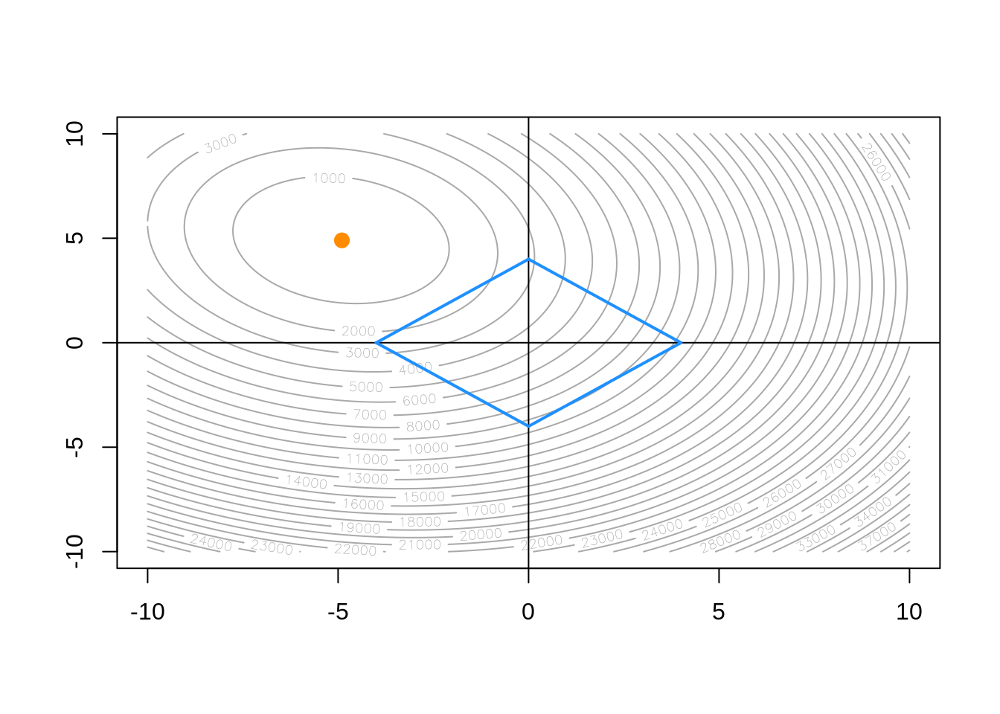
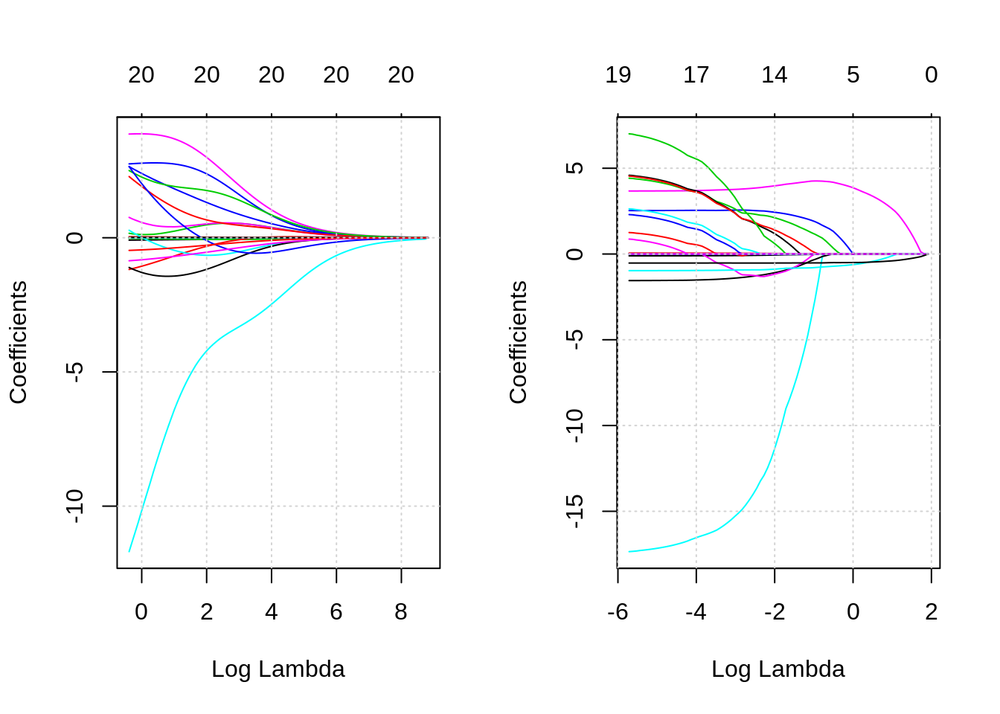
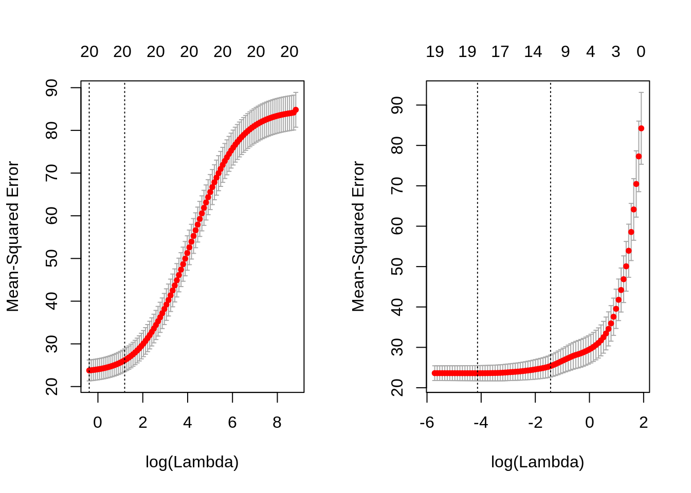

Chapter 14 Regularization
14.2 adding bias to reduce variance
# this is a bad function name
dgp = function(sample_size = 25) {
x = runif(n = sample_size)
y = 0 + 5 * x + rnorm(n = sample_size)
data.frame(x, y)
}# maybe write a function for each
beta_ls = replicate(n = 1000, coef(lm(y ~ 0 + x, data = dgp()))["x"])
beta_05 = replicate(n = 1000, min(coef(lm(y ~ 0 + x, data = dgp()))["x"], 5))
beta_04 = replicate(n = 1000, min(coef(lm(y ~ 0 + x, data = dgp()))["x"], 4))## [1] -0.0003759144 0.3629565029## [1] -0.1407815 0.2058658## [1] -1.0000283827 0.000897538914.3 scaling matters?
dgp = function(sample_size = 25) {
x = runif(n = sample_size)
y = -2 + 5 * x + rnorm(n = sample_size)
data.frame(x, y)
}## 1 2 3 4 5
## -0.382325581 2.335581287 0.454389897 0.003314541 -0.097401253
## 6 7 8 9 10
## 0.088987665 0.318686153 -0.104448719 0.827609897 -1.107650695
## 11 12 13 14 15
## -1.247017748 0.569171428 -1.225213533 0.480590570 1.798295354
## 16 17 18 19 20
## 1.773466213 -0.262849108 -0.577681158 1.520661539 1.097667313
## 21 22 23 24 25
## -0.843904758 -0.304753005 -1.055747512 1.700604544 -0.749181170## 1 2 3 4 5
## -0.382325581 2.335581287 0.454389897 0.003314541 -0.097401253
## 6 7 8 9 10
## 0.088987665 0.318686153 -0.104448719 0.827609897 -1.107650695
## 11 12 13 14 15
## -1.247017748 0.569171428 -1.225213533 0.480590570 1.798295354
## 16 17 18 19 20
## 1.773466213 -0.262849108 -0.577681158 1.520661539 1.097667313
## 21 22 23 24 25
## -0.843904758 -0.304753005 -1.055747512 1.700604544 -0.74918117014.4 moving to two dimensions
gen_linear_data = function() {
x1 = rnorm(100)
x2 = rnorm(100)
y = 0 + -5 * x1 + 5 * x2 + rnorm(100)
data.frame(x1, x2, y)
}data = gen_linear_data()
beta = expand.grid(beta_1 = seq(-10, 10, 0.1),
beta_2 = seq(-10, 10, 0.1))
beta_error = rep(0, dim(beta)[1])
for (i in 1:dim(beta)[1]){
beta_error[i] = with(data, sum((y - (beta$beta_1[i] * x1 + beta$beta_2[i] * x2)) ^ 2 ))
}# TODO: make this into a function
# TODO: add ridge constraint
contour(x = seq(-10, 10, 0.1),
y = seq(-10, 10, 0.1),
z = matrix(beta_error,
nrow = length(seq(-10, 10, 0.1)),
ncol = length(seq(-10, 10, 0.1))),
nlevels = 50,
col = "darkgrey"
)
abline(h = 0)
abline(v = 0)
a = 4
segments(0, a, a, 0, col = "dodgerblue", lwd = 2)
segments(0, -a, a, 0, col = "dodgerblue", lwd = 2)
segments(-a, 0, 0, a, col = "dodgerblue", lwd = 2)
segments(-a, 0, 0, -a, col = "dodgerblue", lwd = 2)
points(beta[which.min(beta_error), ], col = "darkorange", pch = 20, cex = 2)
14.5 boston is boring
## [1] "0" "1"## [1] "1" "2" "3" "4" "5" "6" "7" "8" "24"##
## Call:
## lm(formula = medv ~ ., data = bstn)
##
## Coefficients:
## (Intercept) crim zn indus chas1
## 35.259615 -0.108821 0.054896 0.023760 2.524163
## nox rm age dis rad2
## -17.573132 3.665491 0.000461 -1.554546 1.488905
## rad3 rad4 rad5 rad6 rad7
## 4.681253 2.576234 2.918493 1.185839 4.878992
## rad8 rad24 tax ptratio black
## 4.839836 7.461674 -0.008748 -0.972419 0.009394
## lstat
## -0.529226## (Intercept) crim zn indus chas1 nox rm age dis rad2
## 1 1 0.00632 18.0 2.31 0 0.5380 6.575 65.2 4.0900 0
## 2 1 0.02731 0.0 7.07 0 0.4690 6.421 78.9 4.9671 1
## 3 1 0.02729 0.0 7.07 0 0.4690 7.185 61.1 4.9671 1
## 4 1 0.03237 0.0 2.18 0 0.4580 6.998 45.8 6.0622 0
## 5 1 0.06905 0.0 2.18 0 0.4580 7.147 54.2 6.0622 0
## 6 1 0.02985 0.0 2.18 0 0.4580 6.430 58.7 6.0622 0
## 7 1 0.08829 12.5 7.87 0 0.5240 6.012 66.6 5.5605 0
## 8 1 0.14455 12.5 7.87 0 0.5240 6.172 96.1 5.9505 0
## 9 1 0.21124 12.5 7.87 0 0.5240 5.631 100.0 6.0821 0
## 10 1 0.17004 12.5 7.87 0 0.5240 6.004 85.9 6.5921 0
## 11 1 0.22489 12.5 7.87 0 0.5240 6.377 94.3 6.3467 0
## 12 1 0.11747 12.5 7.87 0 0.5240 6.009 82.9 6.2267 0
## 13 1 0.09378 12.5 7.87 0 0.5240 5.889 39.0 5.4509 0
## 14 1 0.62976 0.0 8.14 0 0.5380 5.949 61.8 4.7075 0
## 15 1 0.63796 0.0 8.14 0 0.5380 6.096 84.5 4.4619 0
## 16 1 0.62739 0.0 8.14 0 0.5380 5.834 56.5 4.4986 0
## 17 1 1.05393 0.0 8.14 0 0.5380 5.935 29.3 4.4986 0
## 18 1 0.78420 0.0 8.14 0 0.5380 5.990 81.7 4.2579 0
## 19 1 0.80271 0.0 8.14 0 0.5380 5.456 36.6 3.7965 0
## 20 1 0.72580 0.0 8.14 0 0.5380 5.727 69.5 3.7965 0
## 21 1 1.25179 0.0 8.14 0 0.5380 5.570 98.1 3.7979 0
## 22 1 0.85204 0.0 8.14 0 0.5380 5.965 89.2 4.0123 0
## 23 1 1.23247 0.0 8.14 0 0.5380 6.142 91.7 3.9769 0
## 24 1 0.98843 0.0 8.14 0 0.5380 5.813 100.0 4.0952 0
## 25 1 0.75026 0.0 8.14 0 0.5380 5.924 94.1 4.3996 0
## 26 1 0.84054 0.0 8.14 0 0.5380 5.599 85.7 4.4546 0
## 27 1 0.67191 0.0 8.14 0 0.5380 5.813 90.3 4.6820 0
## 28 1 0.95577 0.0 8.14 0 0.5380 6.047 88.8 4.4534 0
## 29 1 0.77299 0.0 8.14 0 0.5380 6.495 94.4 4.4547 0
## 30 1 1.00245 0.0 8.14 0 0.5380 6.674 87.3 4.2390 0
## 31 1 1.13081 0.0 8.14 0 0.5380 5.713 94.1 4.2330 0
## 32 1 1.35472 0.0 8.14 0 0.5380 6.072 100.0 4.1750 0
## 33 1 1.38799 0.0 8.14 0 0.5380 5.950 82.0 3.9900 0
## 34 1 1.15172 0.0 8.14 0 0.5380 5.701 95.0 3.7872 0
## 35 1 1.61282 0.0 8.14 0 0.5380 6.096 96.9 3.7598 0
## 36 1 0.06417 0.0 5.96 0 0.4990 5.933 68.2 3.3603 0
## 37 1 0.09744 0.0 5.96 0 0.4990 5.841 61.4 3.3779 0
## 38 1 0.08014 0.0 5.96 0 0.4990 5.850 41.5 3.9342 0
## 39 1 0.17505 0.0 5.96 0 0.4990 5.966 30.2 3.8473 0
## 40 1 0.02763 75.0 2.95 0 0.4280 6.595 21.8 5.4011 0
## 41 1 0.03359 75.0 2.95 0 0.4280 7.024 15.8 5.4011 0
## 42 1 0.12744 0.0 6.91 0 0.4480 6.770 2.9 5.7209 0
## 43 1 0.14150 0.0 6.91 0 0.4480 6.169 6.6 5.7209 0
## 44 1 0.15936 0.0 6.91 0 0.4480 6.211 6.5 5.7209 0
## 45 1 0.12269 0.0 6.91 0 0.4480 6.069 40.0 5.7209 0
## 46 1 0.17142 0.0 6.91 0 0.4480 5.682 33.8 5.1004 0
## 47 1 0.18836 0.0 6.91 0 0.4480 5.786 33.3 5.1004 0
## 48 1 0.22927 0.0 6.91 0 0.4480 6.030 85.5 5.6894 0
## 49 1 0.25387 0.0 6.91 0 0.4480 5.399 95.3 5.8700 0
## 50 1 0.21977 0.0 6.91 0 0.4480 5.602 62.0 6.0877 0
## 51 1 0.08873 21.0 5.64 0 0.4390 5.963 45.7 6.8147 0
## 52 1 0.04337 21.0 5.64 0 0.4390 6.115 63.0 6.8147 0
## 53 1 0.05360 21.0 5.64 0 0.4390 6.511 21.1 6.8147 0
## 54 1 0.04981 21.0 5.64 0 0.4390 5.998 21.4 6.8147 0
## 55 1 0.01360 75.0 4.00 0 0.4100 5.888 47.6 7.3197 0
## 56 1 0.01311 90.0 1.22 0 0.4030 7.249 21.9 8.6966 0
## 57 1 0.02055 85.0 0.74 0 0.4100 6.383 35.7 9.1876 1
## 58 1 0.01432 100.0 1.32 0 0.4110 6.816 40.5 8.3248 0
## 59 1 0.15445 25.0 5.13 0 0.4530 6.145 29.2 7.8148 0
## 60 1 0.10328 25.0 5.13 0 0.4530 5.927 47.2 6.9320 0
## 61 1 0.14932 25.0 5.13 0 0.4530 5.741 66.2 7.2254 0
## 62 1 0.17171 25.0 5.13 0 0.4530 5.966 93.4 6.8185 0
## 63 1 0.11027 25.0 5.13 0 0.4530 6.456 67.8 7.2255 0
## 64 1 0.12650 25.0 5.13 0 0.4530 6.762 43.4 7.9809 0
## 65 1 0.01951 17.5 1.38 0 0.4161 7.104 59.5 9.2229 0
## 66 1 0.03584 80.0 3.37 0 0.3980 6.290 17.8 6.6115 0
## 67 1 0.04379 80.0 3.37 0 0.3980 5.787 31.1 6.6115 0
## 68 1 0.05789 12.5 6.07 0 0.4090 5.878 21.4 6.4980 0
## 69 1 0.13554 12.5 6.07 0 0.4090 5.594 36.8 6.4980 0
## 70 1 0.12816 12.5 6.07 0 0.4090 5.885 33.0 6.4980 0
## 71 1 0.08826 0.0 10.81 0 0.4130 6.417 6.6 5.2873 0
## 72 1 0.15876 0.0 10.81 0 0.4130 5.961 17.5 5.2873 0
## 73 1 0.09164 0.0 10.81 0 0.4130 6.065 7.8 5.2873 0
## 74 1 0.19539 0.0 10.81 0 0.4130 6.245 6.2 5.2873 0
## 75 1 0.07896 0.0 12.83 0 0.4370 6.273 6.0 4.2515 0
## 76 1 0.09512 0.0 12.83 0 0.4370 6.286 45.0 4.5026 0
## 77 1 0.10153 0.0 12.83 0 0.4370 6.279 74.5 4.0522 0
## 78 1 0.08707 0.0 12.83 0 0.4370 6.140 45.8 4.0905 0
## 79 1 0.05646 0.0 12.83 0 0.4370 6.232 53.7 5.0141 0
## 80 1 0.08387 0.0 12.83 0 0.4370 5.874 36.6 4.5026 0
## 81 1 0.04113 25.0 4.86 0 0.4260 6.727 33.5 5.4007 0
## 82 1 0.04462 25.0 4.86 0 0.4260 6.619 70.4 5.4007 0
## 83 1 0.03659 25.0 4.86 0 0.4260 6.302 32.2 5.4007 0
## 84 1 0.03551 25.0 4.86 0 0.4260 6.167 46.7 5.4007 0
## 85 1 0.05059 0.0 4.49 0 0.4490 6.389 48.0 4.7794 0
## 86 1 0.05735 0.0 4.49 0 0.4490 6.630 56.1 4.4377 0
## 87 1 0.05188 0.0 4.49 0 0.4490 6.015 45.1 4.4272 0
## 88 1 0.07151 0.0 4.49 0 0.4490 6.121 56.8 3.7476 0
## 89 1 0.05660 0.0 3.41 0 0.4890 7.007 86.3 3.4217 1
## 90 1 0.05302 0.0 3.41 0 0.4890 7.079 63.1 3.4145 1
## 91 1 0.04684 0.0 3.41 0 0.4890 6.417 66.1 3.0923 1
## 92 1 0.03932 0.0 3.41 0 0.4890 6.405 73.9 3.0921 1
## 93 1 0.04203 28.0 15.04 0 0.4640 6.442 53.6 3.6659 0
## 94 1 0.02875 28.0 15.04 0 0.4640 6.211 28.9 3.6659 0
## 95 1 0.04294 28.0 15.04 0 0.4640 6.249 77.3 3.6150 0
## 96 1 0.12204 0.0 2.89 0 0.4450 6.625 57.8 3.4952 1
## 97 1 0.11504 0.0 2.89 0 0.4450 6.163 69.6 3.4952 1
## 98 1 0.12083 0.0 2.89 0 0.4450 8.069 76.0 3.4952 1
## 99 1 0.08187 0.0 2.89 0 0.4450 7.820 36.9 3.4952 1
## 100 1 0.06860 0.0 2.89 0 0.4450 7.416 62.5 3.4952 1
## 101 1 0.14866 0.0 8.56 0 0.5200 6.727 79.9 2.7778 0
## 102 1 0.11432 0.0 8.56 0 0.5200 6.781 71.3 2.8561 0
## 103 1 0.22876 0.0 8.56 0 0.5200 6.405 85.4 2.7147 0
## 104 1 0.21161 0.0 8.56 0 0.5200 6.137 87.4 2.7147 0
## 105 1 0.13960 0.0 8.56 0 0.5200 6.167 90.0 2.4210 0
## 106 1 0.13262 0.0 8.56 0 0.5200 5.851 96.7 2.1069 0
## 107 1 0.17120 0.0 8.56 0 0.5200 5.836 91.9 2.2110 0
## 108 1 0.13117 0.0 8.56 0 0.5200 6.127 85.2 2.1224 0
## 109 1 0.12802 0.0 8.56 0 0.5200 6.474 97.1 2.4329 0
## 110 1 0.26363 0.0 8.56 0 0.5200 6.229 91.2 2.5451 0
## 111 1 0.10793 0.0 8.56 0 0.5200 6.195 54.4 2.7778 0
## 112 1 0.10084 0.0 10.01 0 0.5470 6.715 81.6 2.6775 0
## 113 1 0.12329 0.0 10.01 0 0.5470 5.913 92.9 2.3534 0
## 114 1 0.22212 0.0 10.01 0 0.5470 6.092 95.4 2.5480 0
## 115 1 0.14231 0.0 10.01 0 0.5470 6.254 84.2 2.2565 0
## 116 1 0.17134 0.0 10.01 0 0.5470 5.928 88.2 2.4631 0
## 117 1 0.13158 0.0 10.01 0 0.5470 6.176 72.5 2.7301 0
## 118 1 0.15098 0.0 10.01 0 0.5470 6.021 82.6 2.7474 0
## 119 1 0.13058 0.0 10.01 0 0.5470 5.872 73.1 2.4775 0
## 120 1 0.14476 0.0 10.01 0 0.5470 5.731 65.2 2.7592 0
## 121 1 0.06899 0.0 25.65 0 0.5810 5.870 69.7 2.2577 1
## 122 1 0.07165 0.0 25.65 0 0.5810 6.004 84.1 2.1974 1
## 123 1 0.09299 0.0 25.65 0 0.5810 5.961 92.9 2.0869 1
## 124 1 0.15038 0.0 25.65 0 0.5810 5.856 97.0 1.9444 1
## 125 1 0.09849 0.0 25.65 0 0.5810 5.879 95.8 2.0063 1
## 126 1 0.16902 0.0 25.65 0 0.5810 5.986 88.4 1.9929 1
## 127 1 0.38735 0.0 25.65 0 0.5810 5.613 95.6 1.7572 1
## 128 1 0.25915 0.0 21.89 0 0.6240 5.693 96.0 1.7883 0
## 129 1 0.32543 0.0 21.89 0 0.6240 6.431 98.8 1.8125 0
## 130 1 0.88125 0.0 21.89 0 0.6240 5.637 94.7 1.9799 0
## 131 1 0.34006 0.0 21.89 0 0.6240 6.458 98.9 2.1185 0
## 132 1 1.19294 0.0 21.89 0 0.6240 6.326 97.7 2.2710 0
## 133 1 0.59005 0.0 21.89 0 0.6240 6.372 97.9 2.3274 0
## 134 1 0.32982 0.0 21.89 0 0.6240 5.822 95.4 2.4699 0
## 135 1 0.97617 0.0 21.89 0 0.6240 5.757 98.4 2.3460 0
## 136 1 0.55778 0.0 21.89 0 0.6240 6.335 98.2 2.1107 0
## 137 1 0.32264 0.0 21.89 0 0.6240 5.942 93.5 1.9669 0
## 138 1 0.35233 0.0 21.89 0 0.6240 6.454 98.4 1.8498 0
## 139 1 0.24980 0.0 21.89 0 0.6240 5.857 98.2 1.6686 0
## 140 1 0.54452 0.0 21.89 0 0.6240 6.151 97.9 1.6687 0
## 141 1 0.29090 0.0 21.89 0 0.6240 6.174 93.6 1.6119 0
## 142 1 1.62864 0.0 21.89 0 0.6240 5.019 100.0 1.4394 0
## 143 1 3.32105 0.0 19.58 1 0.8710 5.403 100.0 1.3216 0
## 144 1 4.09740 0.0 19.58 0 0.8710 5.468 100.0 1.4118 0
## 145 1 2.77974 0.0 19.58 0 0.8710 4.903 97.8 1.3459 0
## 146 1 2.37934 0.0 19.58 0 0.8710 6.130 100.0 1.4191 0
## 147 1 2.15505 0.0 19.58 0 0.8710 5.628 100.0 1.5166 0
## 148 1 2.36862 0.0 19.58 0 0.8710 4.926 95.7 1.4608 0
## 149 1 2.33099 0.0 19.58 0 0.8710 5.186 93.8 1.5296 0
## 150 1 2.73397 0.0 19.58 0 0.8710 5.597 94.9 1.5257 0
## 151 1 1.65660 0.0 19.58 0 0.8710 6.122 97.3 1.6180 0
## 152 1 1.49632 0.0 19.58 0 0.8710 5.404 100.0 1.5916 0
## 153 1 1.12658 0.0 19.58 1 0.8710 5.012 88.0 1.6102 0
## 154 1 2.14918 0.0 19.58 0 0.8710 5.709 98.5 1.6232 0
## 155 1 1.41385 0.0 19.58 1 0.8710 6.129 96.0 1.7494 0
## 156 1 3.53501 0.0 19.58 1 0.8710 6.152 82.6 1.7455 0
## 157 1 2.44668 0.0 19.58 0 0.8710 5.272 94.0 1.7364 0
## 158 1 1.22358 0.0 19.58 0 0.6050 6.943 97.4 1.8773 0
## 159 1 1.34284 0.0 19.58 0 0.6050 6.066 100.0 1.7573 0
## 160 1 1.42502 0.0 19.58 0 0.8710 6.510 100.0 1.7659 0
## 161 1 1.27346 0.0 19.58 1 0.6050 6.250 92.6 1.7984 0
## 162 1 1.46336 0.0 19.58 0 0.6050 7.489 90.8 1.9709 0
## 163 1 1.83377 0.0 19.58 1 0.6050 7.802 98.2 2.0407 0
## 164 1 1.51902 0.0 19.58 1 0.6050 8.375 93.9 2.1620 0
## 165 1 2.24236 0.0 19.58 0 0.6050 5.854 91.8 2.4220 0
## 166 1 2.92400 0.0 19.58 0 0.6050 6.101 93.0 2.2834 0
## 167 1 2.01019 0.0 19.58 0 0.6050 7.929 96.2 2.0459 0
## 168 1 1.80028 0.0 19.58 0 0.6050 5.877 79.2 2.4259 0
## 169 1 2.30040 0.0 19.58 0 0.6050 6.319 96.1 2.1000 0
## 170 1 2.44953 0.0 19.58 0 0.6050 6.402 95.2 2.2625 0
## 171 1 1.20742 0.0 19.58 0 0.6050 5.875 94.6 2.4259 0
## 172 1 2.31390 0.0 19.58 0 0.6050 5.880 97.3 2.3887 0
## 173 1 0.13914 0.0 4.05 0 0.5100 5.572 88.5 2.5961 0
## 174 1 0.09178 0.0 4.05 0 0.5100 6.416 84.1 2.6463 0
## 175 1 0.08447 0.0 4.05 0 0.5100 5.859 68.7 2.7019 0
## 176 1 0.06664 0.0 4.05 0 0.5100 6.546 33.1 3.1323 0
## 177 1 0.07022 0.0 4.05 0 0.5100 6.020 47.2 3.5549 0
## 178 1 0.05425 0.0 4.05 0 0.5100 6.315 73.4 3.3175 0
## 179 1 0.06642 0.0 4.05 0 0.5100 6.860 74.4 2.9153 0
## 180 1 0.05780 0.0 2.46 0 0.4880 6.980 58.4 2.8290 0
## 181 1 0.06588 0.0 2.46 0 0.4880 7.765 83.3 2.7410 0
## 182 1 0.06888 0.0 2.46 0 0.4880 6.144 62.2 2.5979 0
## 183 1 0.09103 0.0 2.46 0 0.4880 7.155 92.2 2.7006 0
## 184 1 0.10008 0.0 2.46 0 0.4880 6.563 95.6 2.8470 0
## 185 1 0.08308 0.0 2.46 0 0.4880 5.604 89.8 2.9879 0
## 186 1 0.06047 0.0 2.46 0 0.4880 6.153 68.8 3.2797 0
## 187 1 0.05602 0.0 2.46 0 0.4880 7.831 53.6 3.1992 0
## 188 1 0.07875 45.0 3.44 0 0.4370 6.782 41.1 3.7886 0
## 189 1 0.12579 45.0 3.44 0 0.4370 6.556 29.1 4.5667 0
## 190 1 0.08370 45.0 3.44 0 0.4370 7.185 38.9 4.5667 0
## 191 1 0.09068 45.0 3.44 0 0.4370 6.951 21.5 6.4798 0
## 192 1 0.06911 45.0 3.44 0 0.4370 6.739 30.8 6.4798 0
## 193 1 0.08664 45.0 3.44 0 0.4370 7.178 26.3 6.4798 0
## 194 1 0.02187 60.0 2.93 0 0.4010 6.800 9.9 6.2196 0
## 195 1 0.01439 60.0 2.93 0 0.4010 6.604 18.8 6.2196 0
## 196 1 0.01381 80.0 0.46 0 0.4220 7.875 32.0 5.6484 0
## 197 1 0.04011 80.0 1.52 0 0.4040 7.287 34.1 7.3090 1
## 198 1 0.04666 80.0 1.52 0 0.4040 7.107 36.6 7.3090 1
## 199 1 0.03768 80.0 1.52 0 0.4040 7.274 38.3 7.3090 1
## 200 1 0.03150 95.0 1.47 0 0.4030 6.975 15.3 7.6534 0
## 201 1 0.01778 95.0 1.47 0 0.4030 7.135 13.9 7.6534 0
## 202 1 0.03445 82.5 2.03 0 0.4150 6.162 38.4 6.2700 1
## 203 1 0.02177 82.5 2.03 0 0.4150 7.610 15.7 6.2700 1
## 204 1 0.03510 95.0 2.68 0 0.4161 7.853 33.2 5.1180 0
## 205 1 0.02009 95.0 2.68 0 0.4161 8.034 31.9 5.1180 0
## 206 1 0.13642 0.0 10.59 0 0.4890 5.891 22.3 3.9454 0
## 207 1 0.22969 0.0 10.59 0 0.4890 6.326 52.5 4.3549 0
## 208 1 0.25199 0.0 10.59 0 0.4890 5.783 72.7 4.3549 0
## 209 1 0.13587 0.0 10.59 1 0.4890 6.064 59.1 4.2392 0
## 210 1 0.43571 0.0 10.59 1 0.4890 5.344 100.0 3.8750 0
## 211 1 0.17446 0.0 10.59 1 0.4890 5.960 92.1 3.8771 0
## 212 1 0.37578 0.0 10.59 1 0.4890 5.404 88.6 3.6650 0
## 213 1 0.21719 0.0 10.59 1 0.4890 5.807 53.8 3.6526 0
## 214 1 0.14052 0.0 10.59 0 0.4890 6.375 32.3 3.9454 0
## 215 1 0.28955 0.0 10.59 0 0.4890 5.412 9.8 3.5875 0
## 216 1 0.19802 0.0 10.59 0 0.4890 6.182 42.4 3.9454 0
## 217 1 0.04560 0.0 13.89 1 0.5500 5.888 56.0 3.1121 0
## 218 1 0.07013 0.0 13.89 0 0.5500 6.642 85.1 3.4211 0
## 219 1 0.11069 0.0 13.89 1 0.5500 5.951 93.8 2.8893 0
## 220 1 0.11425 0.0 13.89 1 0.5500 6.373 92.4 3.3633 0
## 221 1 0.35809 0.0 6.20 1 0.5070 6.951 88.5 2.8617 0
## 222 1 0.40771 0.0 6.20 1 0.5070 6.164 91.3 3.0480 0
## 223 1 0.62356 0.0 6.20 1 0.5070 6.879 77.7 3.2721 0
## 224 1 0.61470 0.0 6.20 0 0.5070 6.618 80.8 3.2721 0
## 225 1 0.31533 0.0 6.20 0 0.5040 8.266 78.3 2.8944 0
## 226 1 0.52693 0.0 6.20 0 0.5040 8.725 83.0 2.8944 0
## 227 1 0.38214 0.0 6.20 0 0.5040 8.040 86.5 3.2157 0
## 228 1 0.41238 0.0 6.20 0 0.5040 7.163 79.9 3.2157 0
## 229 1 0.29819 0.0 6.20 0 0.5040 7.686 17.0 3.3751 0
## 230 1 0.44178 0.0 6.20 0 0.5040 6.552 21.4 3.3751 0
## 231 1 0.53700 0.0 6.20 0 0.5040 5.981 68.1 3.6715 0
## 232 1 0.46296 0.0 6.20 0 0.5040 7.412 76.9 3.6715 0
## 233 1 0.57529 0.0 6.20 0 0.5070 8.337 73.3 3.8384 0
## 234 1 0.33147 0.0 6.20 0 0.5070 8.247 70.4 3.6519 0
## 235 1 0.44791 0.0 6.20 1 0.5070 6.726 66.5 3.6519 0
## 236 1 0.33045 0.0 6.20 0 0.5070 6.086 61.5 3.6519 0
## 237 1 0.52058 0.0 6.20 1 0.5070 6.631 76.5 4.1480 0
## 238 1 0.51183 0.0 6.20 0 0.5070 7.358 71.6 4.1480 0
## 239 1 0.08244 30.0 4.93 0 0.4280 6.481 18.5 6.1899 0
## 240 1 0.09252 30.0 4.93 0 0.4280 6.606 42.2 6.1899 0
## 241 1 0.11329 30.0 4.93 0 0.4280 6.897 54.3 6.3361 0
## 242 1 0.10612 30.0 4.93 0 0.4280 6.095 65.1 6.3361 0
## 243 1 0.10290 30.0 4.93 0 0.4280 6.358 52.9 7.0355 0
## 244 1 0.12757 30.0 4.93 0 0.4280 6.393 7.8 7.0355 0
## 245 1 0.20608 22.0 5.86 0 0.4310 5.593 76.5 7.9549 0
## 246 1 0.19133 22.0 5.86 0 0.4310 5.605 70.2 7.9549 0
## 247 1 0.33983 22.0 5.86 0 0.4310 6.108 34.9 8.0555 0
## 248 1 0.19657 22.0 5.86 0 0.4310 6.226 79.2 8.0555 0
## 249 1 0.16439 22.0 5.86 0 0.4310 6.433 49.1 7.8265 0
## 250 1 0.19073 22.0 5.86 0 0.4310 6.718 17.5 7.8265 0
## 251 1 0.14030 22.0 5.86 0 0.4310 6.487 13.0 7.3967 0
## 252 1 0.21409 22.0 5.86 0 0.4310 6.438 8.9 7.3967 0
## 253 1 0.08221 22.0 5.86 0 0.4310 6.957 6.8 8.9067 0
## 254 1 0.36894 22.0 5.86 0 0.4310 8.259 8.4 8.9067 0
## 255 1 0.04819 80.0 3.64 0 0.3920 6.108 32.0 9.2203 0
## 256 1 0.03548 80.0 3.64 0 0.3920 5.876 19.1 9.2203 0
## 257 1 0.01538 90.0 3.75 0 0.3940 7.454 34.2 6.3361 0
## 258 1 0.61154 20.0 3.97 0 0.6470 8.704 86.9 1.8010 0
## 259 1 0.66351 20.0 3.97 0 0.6470 7.333 100.0 1.8946 0
## 260 1 0.65665 20.0 3.97 0 0.6470 6.842 100.0 2.0107 0
## 261 1 0.54011 20.0 3.97 0 0.6470 7.203 81.8 2.1121 0
## 262 1 0.53412 20.0 3.97 0 0.6470 7.520 89.4 2.1398 0
## 263 1 0.52014 20.0 3.97 0 0.6470 8.398 91.5 2.2885 0
## 264 1 0.82526 20.0 3.97 0 0.6470 7.327 94.5 2.0788 0
## 265 1 0.55007 20.0 3.97 0 0.6470 7.206 91.6 1.9301 0
## 266 1 0.76162 20.0 3.97 0 0.6470 5.560 62.8 1.9865 0
## 267 1 0.78570 20.0 3.97 0 0.6470 7.014 84.6 2.1329 0
## 268 1 0.57834 20.0 3.97 0 0.5750 8.297 67.0 2.4216 0
## 269 1 0.54050 20.0 3.97 0 0.5750 7.470 52.6 2.8720 0
## 270 1 0.09065 20.0 6.96 1 0.4640 5.920 61.5 3.9175 0
## 271 1 0.29916 20.0 6.96 0 0.4640 5.856 42.1 4.4290 0
## 272 1 0.16211 20.0 6.96 0 0.4640 6.240 16.3 4.4290 0
## 273 1 0.11460 20.0 6.96 0 0.4640 6.538 58.7 3.9175 0
## 274 1 0.22188 20.0 6.96 1 0.4640 7.691 51.8 4.3665 0
## 275 1 0.05644 40.0 6.41 1 0.4470 6.758 32.9 4.0776 0
## 276 1 0.09604 40.0 6.41 0 0.4470 6.854 42.8 4.2673 0
## 277 1 0.10469 40.0 6.41 1 0.4470 7.267 49.0 4.7872 0
## 278 1 0.06127 40.0 6.41 1 0.4470 6.826 27.6 4.8628 0
## 279 1 0.07978 40.0 6.41 0 0.4470 6.482 32.1 4.1403 0
## 280 1 0.21038 20.0 3.33 0 0.4429 6.812 32.2 4.1007 0
## 281 1 0.03578 20.0 3.33 0 0.4429 7.820 64.5 4.6947 0
## 282 1 0.03705 20.0 3.33 0 0.4429 6.968 37.2 5.2447 0
## 283 1 0.06129 20.0 3.33 1 0.4429 7.645 49.7 5.2119 0
## 284 1 0.01501 90.0 1.21 1 0.4010 7.923 24.8 5.8850 0
## 285 1 0.00906 90.0 2.97 0 0.4000 7.088 20.8 7.3073 0
## 286 1 0.01096 55.0 2.25 0 0.3890 6.453 31.9 7.3073 0
## 287 1 0.01965 80.0 1.76 0 0.3850 6.230 31.5 9.0892 0
## 288 1 0.03871 52.5 5.32 0 0.4050 6.209 31.3 7.3172 0
## 289 1 0.04590 52.5 5.32 0 0.4050 6.315 45.6 7.3172 0
## 290 1 0.04297 52.5 5.32 0 0.4050 6.565 22.9 7.3172 0
## 291 1 0.03502 80.0 4.95 0 0.4110 6.861 27.9 5.1167 0
## 292 1 0.07886 80.0 4.95 0 0.4110 7.148 27.7 5.1167 0
## 293 1 0.03615 80.0 4.95 0 0.4110 6.630 23.4 5.1167 0
## 294 1 0.08265 0.0 13.92 0 0.4370 6.127 18.4 5.5027 0
## 295 1 0.08199 0.0 13.92 0 0.4370 6.009 42.3 5.5027 0
## 296 1 0.12932 0.0 13.92 0 0.4370 6.678 31.1 5.9604 0
## 297 1 0.05372 0.0 13.92 0 0.4370 6.549 51.0 5.9604 0
## 298 1 0.14103 0.0 13.92 0 0.4370 5.790 58.0 6.3200 0
## 299 1 0.06466 70.0 2.24 0 0.4000 6.345 20.1 7.8278 0
## 300 1 0.05561 70.0 2.24 0 0.4000 7.041 10.0 7.8278 0
## 301 1 0.04417 70.0 2.24 0 0.4000 6.871 47.4 7.8278 0
## 302 1 0.03537 34.0 6.09 0 0.4330 6.590 40.4 5.4917 0
## 303 1 0.09266 34.0 6.09 0 0.4330 6.495 18.4 5.4917 0
## 304 1 0.10000 34.0 6.09 0 0.4330 6.982 17.7 5.4917 0
## 305 1 0.05515 33.0 2.18 0 0.4720 7.236 41.1 4.0220 0
## 306 1 0.05479 33.0 2.18 0 0.4720 6.616 58.1 3.3700 0
## 307 1 0.07503 33.0 2.18 0 0.4720 7.420 71.9 3.0992 0
## 308 1 0.04932 33.0 2.18 0 0.4720 6.849 70.3 3.1827 0
## 309 1 0.49298 0.0 9.90 0 0.5440 6.635 82.5 3.3175 0
## 310 1 0.34940 0.0 9.90 0 0.5440 5.972 76.7 3.1025 0
## 311 1 2.63548 0.0 9.90 0 0.5440 4.973 37.8 2.5194 0
## 312 1 0.79041 0.0 9.90 0 0.5440 6.122 52.8 2.6403 0
## 313 1 0.26169 0.0 9.90 0 0.5440 6.023 90.4 2.8340 0
## 314 1 0.26938 0.0 9.90 0 0.5440 6.266 82.8 3.2628 0
## 315 1 0.36920 0.0 9.90 0 0.5440 6.567 87.3 3.6023 0
## 316 1 0.25356 0.0 9.90 0 0.5440 5.705 77.7 3.9450 0
## 317 1 0.31827 0.0 9.90 0 0.5440 5.914 83.2 3.9986 0
## 318 1 0.24522 0.0 9.90 0 0.5440 5.782 71.7 4.0317 0
## 319 1 0.40202 0.0 9.90 0 0.5440 6.382 67.2 3.5325 0
## 320 1 0.47547 0.0 9.90 0 0.5440 6.113 58.8 4.0019 0
## 321 1 0.16760 0.0 7.38 0 0.4930 6.426 52.3 4.5404 0
## 322 1 0.18159 0.0 7.38 0 0.4930 6.376 54.3 4.5404 0
## 323 1 0.35114 0.0 7.38 0 0.4930 6.041 49.9 4.7211 0
## 324 1 0.28392 0.0 7.38 0 0.4930 5.708 74.3 4.7211 0
## 325 1 0.34109 0.0 7.38 0 0.4930 6.415 40.1 4.7211 0
## 326 1 0.19186 0.0 7.38 0 0.4930 6.431 14.7 5.4159 0
## 327 1 0.30347 0.0 7.38 0 0.4930 6.312 28.9 5.4159 0
## 328 1 0.24103 0.0 7.38 0 0.4930 6.083 43.7 5.4159 0
## 329 1 0.06617 0.0 3.24 0 0.4600 5.868 25.8 5.2146 0
## 330 1 0.06724 0.0 3.24 0 0.4600 6.333 17.2 5.2146 0
## 331 1 0.04544 0.0 3.24 0 0.4600 6.144 32.2 5.8736 0
## 332 1 0.05023 35.0 6.06 0 0.4379 5.706 28.4 6.6407 0
## 333 1 0.03466 35.0 6.06 0 0.4379 6.031 23.3 6.6407 0
## 334 1 0.05083 0.0 5.19 0 0.5150 6.316 38.1 6.4584 0
## 335 1 0.03738 0.0 5.19 0 0.5150 6.310 38.5 6.4584 0
## 336 1 0.03961 0.0 5.19 0 0.5150 6.037 34.5 5.9853 0
## 337 1 0.03427 0.0 5.19 0 0.5150 5.869 46.3 5.2311 0
## 338 1 0.03041 0.0 5.19 0 0.5150 5.895 59.6 5.6150 0
## 339 1 0.03306 0.0 5.19 0 0.5150 6.059 37.3 4.8122 0
## 340 1 0.05497 0.0 5.19 0 0.5150 5.985 45.4 4.8122 0
## 341 1 0.06151 0.0 5.19 0 0.5150 5.968 58.5 4.8122 0
## 342 1 0.01301 35.0 1.52 0 0.4420 7.241 49.3 7.0379 0
## 343 1 0.02498 0.0 1.89 0 0.5180 6.540 59.7 6.2669 0
## 344 1 0.02543 55.0 3.78 0 0.4840 6.696 56.4 5.7321 0
## 345 1 0.03049 55.0 3.78 0 0.4840 6.874 28.1 6.4654 0
## 346 1 0.03113 0.0 4.39 0 0.4420 6.014 48.5 8.0136 0
## 347 1 0.06162 0.0 4.39 0 0.4420 5.898 52.3 8.0136 0
## 348 1 0.01870 85.0 4.15 0 0.4290 6.516 27.7 8.5353 0
## 349 1 0.01501 80.0 2.01 0 0.4350 6.635 29.7 8.3440 0
## 350 1 0.02899 40.0 1.25 0 0.4290 6.939 34.5 8.7921 0
## 351 1 0.06211 40.0 1.25 0 0.4290 6.490 44.4 8.7921 0
## 352 1 0.07950 60.0 1.69 0 0.4110 6.579 35.9 10.7103 0
## 353 1 0.07244 60.0 1.69 0 0.4110 5.884 18.5 10.7103 0
## 354 1 0.01709 90.0 2.02 0 0.4100 6.728 36.1 12.1265 0
## 355 1 0.04301 80.0 1.91 0 0.4130 5.663 21.9 10.5857 0
## 356 1 0.10659 80.0 1.91 0 0.4130 5.936 19.5 10.5857 0
## 357 1 8.98296 0.0 18.10 1 0.7700 6.212 97.4 2.1222 0
## 358 1 3.84970 0.0 18.10 1 0.7700 6.395 91.0 2.5052 0
## 359 1 5.20177 0.0 18.10 1 0.7700 6.127 83.4 2.7227 0
## 360 1 4.26131 0.0 18.10 0 0.7700 6.112 81.3 2.5091 0
## 361 1 4.54192 0.0 18.10 0 0.7700 6.398 88.0 2.5182 0
## 362 1 3.83684 0.0 18.10 0 0.7700 6.251 91.1 2.2955 0
## 363 1 3.67822 0.0 18.10 0 0.7700 5.362 96.2 2.1036 0
## 364 1 4.22239 0.0 18.10 1 0.7700 5.803 89.0 1.9047 0
## 365 1 3.47428 0.0 18.10 1 0.7180 8.780 82.9 1.9047 0
## 366 1 4.55587 0.0 18.10 0 0.7180 3.561 87.9 1.6132 0
## 367 1 3.69695 0.0 18.10 0 0.7180 4.963 91.4 1.7523 0
## 368 1 13.52220 0.0 18.10 0 0.6310 3.863 100.0 1.5106 0
## 369 1 4.89822 0.0 18.10 0 0.6310 4.970 100.0 1.3325 0
## 370 1 5.66998 0.0 18.10 1 0.6310 6.683 96.8 1.3567 0
## 371 1 6.53876 0.0 18.10 1 0.6310 7.016 97.5 1.2024 0
## 372 1 9.23230 0.0 18.10 0 0.6310 6.216 100.0 1.1691 0
## 373 1 8.26725 0.0 18.10 1 0.6680 5.875 89.6 1.1296 0
## 374 1 11.10810 0.0 18.10 0 0.6680 4.906 100.0 1.1742 0
## 375 1 18.49820 0.0 18.10 0 0.6680 4.138 100.0 1.1370 0
## 376 1 19.60910 0.0 18.10 0 0.6710 7.313 97.9 1.3163 0
## 377 1 15.28800 0.0 18.10 0 0.6710 6.649 93.3 1.3449 0
## 378 1 9.82349 0.0 18.10 0 0.6710 6.794 98.8 1.3580 0
## 379 1 23.64820 0.0 18.10 0 0.6710 6.380 96.2 1.3861 0
## 380 1 17.86670 0.0 18.10 0 0.6710 6.223 100.0 1.3861 0
## 381 1 88.97620 0.0 18.10 0 0.6710 6.968 91.9 1.4165 0
## 382 1 15.87440 0.0 18.10 0 0.6710 6.545 99.1 1.5192 0
## 383 1 9.18702 0.0 18.10 0 0.7000 5.536 100.0 1.5804 0
## 384 1 7.99248 0.0 18.10 0 0.7000 5.520 100.0 1.5331 0
## 385 1 20.08490 0.0 18.10 0 0.7000 4.368 91.2 1.4395 0
## 386 1 16.81180 0.0 18.10 0 0.7000 5.277 98.1 1.4261 0
## 387 1 24.39380 0.0 18.10 0 0.7000 4.652 100.0 1.4672 0
## 388 1 22.59710 0.0 18.10 0 0.7000 5.000 89.5 1.5184 0
## 389 1 14.33370 0.0 18.10 0 0.7000 4.880 100.0 1.5895 0
## 390 1 8.15174 0.0 18.10 0 0.7000 5.390 98.9 1.7281 0
## 391 1 6.96215 0.0 18.10 0 0.7000 5.713 97.0 1.9265 0
## 392 1 5.29305 0.0 18.10 0 0.7000 6.051 82.5 2.1678 0
## 393 1 11.57790 0.0 18.10 0 0.7000 5.036 97.0 1.7700 0
## 394 1 8.64476 0.0 18.10 0 0.6930 6.193 92.6 1.7912 0
## 395 1 13.35980 0.0 18.10 0 0.6930 5.887 94.7 1.7821 0
## 396 1 8.71675 0.0 18.10 0 0.6930 6.471 98.8 1.7257 0
## 397 1 5.87205 0.0 18.10 0 0.6930 6.405 96.0 1.6768 0
## 398 1 7.67202 0.0 18.10 0 0.6930 5.747 98.9 1.6334 0
## 399 1 38.35180 0.0 18.10 0 0.6930 5.453 100.0 1.4896 0
## 400 1 9.91655 0.0 18.10 0 0.6930 5.852 77.8 1.5004 0
## 401 1 25.04610 0.0 18.10 0 0.6930 5.987 100.0 1.5888 0
## 402 1 14.23620 0.0 18.10 0 0.6930 6.343 100.0 1.5741 0
## 403 1 9.59571 0.0 18.10 0 0.6930 6.404 100.0 1.6390 0
## 404 1 24.80170 0.0 18.10 0 0.6930 5.349 96.0 1.7028 0
## 405 1 41.52920 0.0 18.10 0 0.6930 5.531 85.4 1.6074 0
## 406 1 67.92080 0.0 18.10 0 0.6930 5.683 100.0 1.4254 0
## 407 1 20.71620 0.0 18.10 0 0.6590 4.138 100.0 1.1781 0
## 408 1 11.95110 0.0 18.10 0 0.6590 5.608 100.0 1.2852 0
## 409 1 7.40389 0.0 18.10 0 0.5970 5.617 97.9 1.4547 0
## 410 1 14.43830 0.0 18.10 0 0.5970 6.852 100.0 1.4655 0
## 411 1 51.13580 0.0 18.10 0 0.5970 5.757 100.0 1.4130 0
## 412 1 14.05070 0.0 18.10 0 0.5970 6.657 100.0 1.5275 0
## 413 1 18.81100 0.0 18.10 0 0.5970 4.628 100.0 1.5539 0
## 414 1 28.65580 0.0 18.10 0 0.5970 5.155 100.0 1.5894 0
## 415 1 45.74610 0.0 18.10 0 0.6930 4.519 100.0 1.6582 0
## 416 1 18.08460 0.0 18.10 0 0.6790 6.434 100.0 1.8347 0
## 417 1 10.83420 0.0 18.10 0 0.6790 6.782 90.8 1.8195 0
## 418 1 25.94060 0.0 18.10 0 0.6790 5.304 89.1 1.6475 0
## 419 1 73.53410 0.0 18.10 0 0.6790 5.957 100.0 1.8026 0
## 420 1 11.81230 0.0 18.10 0 0.7180 6.824 76.5 1.7940 0
## 421 1 11.08740 0.0 18.10 0 0.7180 6.411 100.0 1.8589 0
## 422 1 7.02259 0.0 18.10 0 0.7180 6.006 95.3 1.8746 0
## 423 1 12.04820 0.0 18.10 0 0.6140 5.648 87.6 1.9512 0
## 424 1 7.05042 0.0 18.10 0 0.6140 6.103 85.1 2.0218 0
## 425 1 8.79212 0.0 18.10 0 0.5840 5.565 70.6 2.0635 0
## 426 1 15.86030 0.0 18.10 0 0.6790 5.896 95.4 1.9096 0
## 427 1 12.24720 0.0 18.10 0 0.5840 5.837 59.7 1.9976 0
## 428 1 37.66190 0.0 18.10 0 0.6790 6.202 78.7 1.8629 0
## 429 1 7.36711 0.0 18.10 0 0.6790 6.193 78.1 1.9356 0
## 430 1 9.33889 0.0 18.10 0 0.6790 6.380 95.6 1.9682 0
## 431 1 8.49213 0.0 18.10 0 0.5840 6.348 86.1 2.0527 0
## 432 1 10.06230 0.0 18.10 0 0.5840 6.833 94.3 2.0882 0
## 433 1 6.44405 0.0 18.10 0 0.5840 6.425 74.8 2.2004 0
## 434 1 5.58107 0.0 18.10 0 0.7130 6.436 87.9 2.3158 0
## 435 1 13.91340 0.0 18.10 0 0.7130 6.208 95.0 2.2222 0
## 436 1 11.16040 0.0 18.10 0 0.7400 6.629 94.6 2.1247 0
## 437 1 14.42080 0.0 18.10 0 0.7400 6.461 93.3 2.0026 0
## 438 1 15.17720 0.0 18.10 0 0.7400 6.152 100.0 1.9142 0
## 439 1 13.67810 0.0 18.10 0 0.7400 5.935 87.9 1.8206 0
## 440 1 9.39063 0.0 18.10 0 0.7400 5.627 93.9 1.8172 0
## 441 1 22.05110 0.0 18.10 0 0.7400 5.818 92.4 1.8662 0
## 442 1 9.72418 0.0 18.10 0 0.7400 6.406 97.2 2.0651 0
## 443 1 5.66637 0.0 18.10 0 0.7400 6.219 100.0 2.0048 0
## 444 1 9.96654 0.0 18.10 0 0.7400 6.485 100.0 1.9784 0
## 445 1 12.80230 0.0 18.10 0 0.7400 5.854 96.6 1.8956 0
## 446 1 10.67180 0.0 18.10 0 0.7400 6.459 94.8 1.9879 0
## 447 1 6.28807 0.0 18.10 0 0.7400 6.341 96.4 2.0720 0
## 448 1 9.92485 0.0 18.10 0 0.7400 6.251 96.6 2.1980 0
## 449 1 9.32909 0.0 18.10 0 0.7130 6.185 98.7 2.2616 0
## 450 1 7.52601 0.0 18.10 0 0.7130 6.417 98.3 2.1850 0
## 451 1 6.71772 0.0 18.10 0 0.7130 6.749 92.6 2.3236 0
## 452 1 5.44114 0.0 18.10 0 0.7130 6.655 98.2 2.3552 0
## 453 1 5.09017 0.0 18.10 0 0.7130 6.297 91.8 2.3682 0
## 454 1 8.24809 0.0 18.10 0 0.7130 7.393 99.3 2.4527 0
## 455 1 9.51363 0.0 18.10 0 0.7130 6.728 94.1 2.4961 0
## 456 1 4.75237 0.0 18.10 0 0.7130 6.525 86.5 2.4358 0
## 457 1 4.66883 0.0 18.10 0 0.7130 5.976 87.9 2.5806 0
## 458 1 8.20058 0.0 18.10 0 0.7130 5.936 80.3 2.7792 0
## 459 1 7.75223 0.0 18.10 0 0.7130 6.301 83.7 2.7831 0
## 460 1 6.80117 0.0 18.10 0 0.7130 6.081 84.4 2.7175 0
## 461 1 4.81213 0.0 18.10 0 0.7130 6.701 90.0 2.5975 0
## 462 1 3.69311 0.0 18.10 0 0.7130 6.376 88.4 2.5671 0
## 463 1 6.65492 0.0 18.10 0 0.7130 6.317 83.0 2.7344 0
## 464 1 5.82115 0.0 18.10 0 0.7130 6.513 89.9 2.8016 0
## 465 1 7.83932 0.0 18.10 0 0.6550 6.209 65.4 2.9634 0
## 466 1 3.16360 0.0 18.10 0 0.6550 5.759 48.2 3.0665 0
## 467 1 3.77498 0.0 18.10 0 0.6550 5.952 84.7 2.8715 0
## 468 1 4.42228 0.0 18.10 0 0.5840 6.003 94.5 2.5403 0
## 469 1 15.57570 0.0 18.10 0 0.5800 5.926 71.0 2.9084 0
## 470 1 13.07510 0.0 18.10 0 0.5800 5.713 56.7 2.8237 0
## 471 1 4.34879 0.0 18.10 0 0.5800 6.167 84.0 3.0334 0
## 472 1 4.03841 0.0 18.10 0 0.5320 6.229 90.7 3.0993 0
## 473 1 3.56868 0.0 18.10 0 0.5800 6.437 75.0 2.8965 0
## 474 1 4.64689 0.0 18.10 0 0.6140 6.980 67.6 2.5329 0
## 475 1 8.05579 0.0 18.10 0 0.5840 5.427 95.4 2.4298 0
## 476 1 6.39312 0.0 18.10 0 0.5840 6.162 97.4 2.2060 0
## 477 1 4.87141 0.0 18.10 0 0.6140 6.484 93.6 2.3053 0
## 478 1 15.02340 0.0 18.10 0 0.6140 5.304 97.3 2.1007 0
## 479 1 10.23300 0.0 18.10 0 0.6140 6.185 96.7 2.1705 0
## 480 1 14.33370 0.0 18.10 0 0.6140 6.229 88.0 1.9512 0
## 481 1 5.82401 0.0 18.10 0 0.5320 6.242 64.7 3.4242 0
## 482 1 5.70818 0.0 18.10 0 0.5320 6.750 74.9 3.3317 0
## 483 1 5.73116 0.0 18.10 0 0.5320 7.061 77.0 3.4106 0
## 484 1 2.81838 0.0 18.10 0 0.5320 5.762 40.3 4.0983 0
## 485 1 2.37857 0.0 18.10 0 0.5830 5.871 41.9 3.7240 0
## 486 1 3.67367 0.0 18.10 0 0.5830 6.312 51.9 3.9917 0
## 487 1 5.69175 0.0 18.10 0 0.5830 6.114 79.8 3.5459 0
## 488 1 4.83567 0.0 18.10 0 0.5830 5.905 53.2 3.1523 0
## 489 1 0.15086 0.0 27.74 0 0.6090 5.454 92.7 1.8209 0
## 490 1 0.18337 0.0 27.74 0 0.6090 5.414 98.3 1.7554 0
## 491 1 0.20746 0.0 27.74 0 0.6090 5.093 98.0 1.8226 0
## 492 1 0.10574 0.0 27.74 0 0.6090 5.983 98.8 1.8681 0
## 493 1 0.11132 0.0 27.74 0 0.6090 5.983 83.5 2.1099 0
## 494 1 0.17331 0.0 9.69 0 0.5850 5.707 54.0 2.3817 0
## 495 1 0.27957 0.0 9.69 0 0.5850 5.926 42.6 2.3817 0
## 496 1 0.17899 0.0 9.69 0 0.5850 5.670 28.8 2.7986 0
## 497 1 0.28960 0.0 9.69 0 0.5850 5.390 72.9 2.7986 0
## 498 1 0.26838 0.0 9.69 0 0.5850 5.794 70.6 2.8927 0
## 499 1 0.23912 0.0 9.69 0 0.5850 6.019 65.3 2.4091 0
## 500 1 0.17783 0.0 9.69 0 0.5850 5.569 73.5 2.3999 0
## 501 1 0.22438 0.0 9.69 0 0.5850 6.027 79.7 2.4982 0
## 502 1 0.06263 0.0 11.93 0 0.5730 6.593 69.1 2.4786 0
## 503 1 0.04527 0.0 11.93 0 0.5730 6.120 76.7 2.2875 0
## 504 1 0.06076 0.0 11.93 0 0.5730 6.976 91.0 2.1675 0
## 505 1 0.10959 0.0 11.93 0 0.5730 6.794 89.3 2.3889 0
## 506 1 0.04741 0.0 11.93 0 0.5730 6.030 80.8 2.5050 0
## rad3 rad4 rad5 rad6 rad7 rad8 rad24 tax ptratio black lstat
## 1 0 0 0 0 0 0 0 296 15.3 396.90 4.98
## 2 0 0 0 0 0 0 0 242 17.8 396.90 9.14
## 3 0 0 0 0 0 0 0 242 17.8 392.83 4.03
## 4 1 0 0 0 0 0 0 222 18.7 394.63 2.94
## 5 1 0 0 0 0 0 0 222 18.7 396.90 5.33
## 6 1 0 0 0 0 0 0 222 18.7 394.12 5.21
## 7 0 0 1 0 0 0 0 311 15.2 395.60 12.43
## 8 0 0 1 0 0 0 0 311 15.2 396.90 19.15
## 9 0 0 1 0 0 0 0 311 15.2 386.63 29.93
## 10 0 0 1 0 0 0 0 311 15.2 386.71 17.10
## 11 0 0 1 0 0 0 0 311 15.2 392.52 20.45
## 12 0 0 1 0 0 0 0 311 15.2 396.90 13.27
## 13 0 0 1 0 0 0 0 311 15.2 390.50 15.71
## 14 0 1 0 0 0 0 0 307 21.0 396.90 8.26
## 15 0 1 0 0 0 0 0 307 21.0 380.02 10.26
## 16 0 1 0 0 0 0 0 307 21.0 395.62 8.47
## 17 0 1 0 0 0 0 0 307 21.0 386.85 6.58
## 18 0 1 0 0 0 0 0 307 21.0 386.75 14.67
## 19 0 1 0 0 0 0 0 307 21.0 288.99 11.69
## 20 0 1 0 0 0 0 0 307 21.0 390.95 11.28
## 21 0 1 0 0 0 0 0 307 21.0 376.57 21.02
## 22 0 1 0 0 0 0 0 307 21.0 392.53 13.83
## 23 0 1 0 0 0 0 0 307 21.0 396.90 18.72
## 24 0 1 0 0 0 0 0 307 21.0 394.54 19.88
## 25 0 1 0 0 0 0 0 307 21.0 394.33 16.30
## 26 0 1 0 0 0 0 0 307 21.0 303.42 16.51
## 27 0 1 0 0 0 0 0 307 21.0 376.88 14.81
## 28 0 1 0 0 0 0 0 307 21.0 306.38 17.28
## 29 0 1 0 0 0 0 0 307 21.0 387.94 12.80
## 30 0 1 0 0 0 0 0 307 21.0 380.23 11.98
## 31 0 1 0 0 0 0 0 307 21.0 360.17 22.60
## 32 0 1 0 0 0 0 0 307 21.0 376.73 13.04
## 33 0 1 0 0 0 0 0 307 21.0 232.60 27.71
## 34 0 1 0 0 0 0 0 307 21.0 358.77 18.35
## 35 0 1 0 0 0 0 0 307 21.0 248.31 20.34
## 36 0 0 1 0 0 0 0 279 19.2 396.90 9.68
## 37 0 0 1 0 0 0 0 279 19.2 377.56 11.41
## 38 0 0 1 0 0 0 0 279 19.2 396.90 8.77
## 39 0 0 1 0 0 0 0 279 19.2 393.43 10.13
## 40 1 0 0 0 0 0 0 252 18.3 395.63 4.32
## 41 1 0 0 0 0 0 0 252 18.3 395.62 1.98
## 42 1 0 0 0 0 0 0 233 17.9 385.41 4.84
## 43 1 0 0 0 0 0 0 233 17.9 383.37 5.81
## 44 1 0 0 0 0 0 0 233 17.9 394.46 7.44
## 45 1 0 0 0 0 0 0 233 17.9 389.39 9.55
## 46 1 0 0 0 0 0 0 233 17.9 396.90 10.21
## 47 1 0 0 0 0 0 0 233 17.9 396.90 14.15
## 48 1 0 0 0 0 0 0 233 17.9 392.74 18.80
## 49 1 0 0 0 0 0 0 233 17.9 396.90 30.81
## 50 1 0 0 0 0 0 0 233 17.9 396.90 16.20
## 51 0 1 0 0 0 0 0 243 16.8 395.56 13.45
## 52 0 1 0 0 0 0 0 243 16.8 393.97 9.43
## 53 0 1 0 0 0 0 0 243 16.8 396.90 5.28
## 54 0 1 0 0 0 0 0 243 16.8 396.90 8.43
## 55 1 0 0 0 0 0 0 469 21.1 396.90 14.80
## 56 0 0 1 0 0 0 0 226 17.9 395.93 4.81
## 57 0 0 0 0 0 0 0 313 17.3 396.90 5.77
## 58 0 0 1 0 0 0 0 256 15.1 392.90 3.95
## 59 0 0 0 0 0 1 0 284 19.7 390.68 6.86
## 60 0 0 0 0 0 1 0 284 19.7 396.90 9.22
## 61 0 0 0 0 0 1 0 284 19.7 395.11 13.15
## 62 0 0 0 0 0 1 0 284 19.7 378.08 14.44
## 63 0 0 0 0 0 1 0 284 19.7 396.90 6.73
## 64 0 0 0 0 0 1 0 284 19.7 395.58 9.50
## 65 1 0 0 0 0 0 0 216 18.6 393.24 8.05
## 66 0 1 0 0 0 0 0 337 16.1 396.90 4.67
## 67 0 1 0 0 0 0 0 337 16.1 396.90 10.24
## 68 0 1 0 0 0 0 0 345 18.9 396.21 8.10
## 69 0 1 0 0 0 0 0 345 18.9 396.90 13.09
## 70 0 1 0 0 0 0 0 345 18.9 396.90 8.79
## 71 0 1 0 0 0 0 0 305 19.2 383.73 6.72
## 72 0 1 0 0 0 0 0 305 19.2 376.94 9.88
## 73 0 1 0 0 0 0 0 305 19.2 390.91 5.52
## 74 0 1 0 0 0 0 0 305 19.2 377.17 7.54
## 75 0 0 1 0 0 0 0 398 18.7 394.92 6.78
## 76 0 0 1 0 0 0 0 398 18.7 383.23 8.94
## 77 0 0 1 0 0 0 0 398 18.7 373.66 11.97
## 78 0 0 1 0 0 0 0 398 18.7 386.96 10.27
## 79 0 0 1 0 0 0 0 398 18.7 386.40 12.34
## 80 0 0 1 0 0 0 0 398 18.7 396.06 9.10
## 81 0 1 0 0 0 0 0 281 19.0 396.90 5.29
## 82 0 1 0 0 0 0 0 281 19.0 395.63 7.22
## 83 0 1 0 0 0 0 0 281 19.0 396.90 6.72
## 84 0 1 0 0 0 0 0 281 19.0 390.64 7.51
## 85 1 0 0 0 0 0 0 247 18.5 396.90 9.62
## 86 1 0 0 0 0 0 0 247 18.5 392.30 6.53
## 87 1 0 0 0 0 0 0 247 18.5 395.99 12.86
## 88 1 0 0 0 0 0 0 247 18.5 395.15 8.44
## 89 0 0 0 0 0 0 0 270 17.8 396.90 5.50
## 90 0 0 0 0 0 0 0 270 17.8 396.06 5.70
## 91 0 0 0 0 0 0 0 270 17.8 392.18 8.81
## 92 0 0 0 0 0 0 0 270 17.8 393.55 8.20
## 93 0 1 0 0 0 0 0 270 18.2 395.01 8.16
## 94 0 1 0 0 0 0 0 270 18.2 396.33 6.21
## 95 0 1 0 0 0 0 0 270 18.2 396.90 10.59
## 96 0 0 0 0 0 0 0 276 18.0 357.98 6.65
## 97 0 0 0 0 0 0 0 276 18.0 391.83 11.34
## 98 0 0 0 0 0 0 0 276 18.0 396.90 4.21
## 99 0 0 0 0 0 0 0 276 18.0 393.53 3.57
## 100 0 0 0 0 0 0 0 276 18.0 396.90 6.19
## 101 0 0 1 0 0 0 0 384 20.9 394.76 9.42
## 102 0 0 1 0 0 0 0 384 20.9 395.58 7.67
## 103 0 0 1 0 0 0 0 384 20.9 70.80 10.63
## 104 0 0 1 0 0 0 0 384 20.9 394.47 13.44
## 105 0 0 1 0 0 0 0 384 20.9 392.69 12.33
## 106 0 0 1 0 0 0 0 384 20.9 394.05 16.47
## 107 0 0 1 0 0 0 0 384 20.9 395.67 18.66
## 108 0 0 1 0 0 0 0 384 20.9 387.69 14.09
## 109 0 0 1 0 0 0 0 384 20.9 395.24 12.27
## 110 0 0 1 0 0 0 0 384 20.9 391.23 15.55
## 111 0 0 1 0 0 0 0 384 20.9 393.49 13.00
## 112 0 0 0 1 0 0 0 432 17.8 395.59 10.16
## 113 0 0 0 1 0 0 0 432 17.8 394.95 16.21
## 114 0 0 0 1 0 0 0 432 17.8 396.90 17.09
## 115 0 0 0 1 0 0 0 432 17.8 388.74 10.45
## 116 0 0 0 1 0 0 0 432 17.8 344.91 15.76
## 117 0 0 0 1 0 0 0 432 17.8 393.30 12.04
## 118 0 0 0 1 0 0 0 432 17.8 394.51 10.30
## 119 0 0 0 1 0 0 0 432 17.8 338.63 15.37
## 120 0 0 0 1 0 0 0 432 17.8 391.50 13.61
## 121 0 0 0 0 0 0 0 188 19.1 389.15 14.37
## 122 0 0 0 0 0 0 0 188 19.1 377.67 14.27
## 123 0 0 0 0 0 0 0 188 19.1 378.09 17.93
## 124 0 0 0 0 0 0 0 188 19.1 370.31 25.41
## 125 0 0 0 0 0 0 0 188 19.1 379.38 17.58
## 126 0 0 0 0 0 0 0 188 19.1 385.02 14.81
## 127 0 0 0 0 0 0 0 188 19.1 359.29 27.26
## 128 0 1 0 0 0 0 0 437 21.2 392.11 17.19
## 129 0 1 0 0 0 0 0 437 21.2 396.90 15.39
## 130 0 1 0 0 0 0 0 437 21.2 396.90 18.34
## 131 0 1 0 0 0 0 0 437 21.2 395.04 12.60
## 132 0 1 0 0 0 0 0 437 21.2 396.90 12.26
## 133 0 1 0 0 0 0 0 437 21.2 385.76 11.12
## 134 0 1 0 0 0 0 0 437 21.2 388.69 15.03
## 135 0 1 0 0 0 0 0 437 21.2 262.76 17.31
## 136 0 1 0 0 0 0 0 437 21.2 394.67 16.96
## 137 0 1 0 0 0 0 0 437 21.2 378.25 16.90
## 138 0 1 0 0 0 0 0 437 21.2 394.08 14.59
## 139 0 1 0 0 0 0 0 437 21.2 392.04 21.32
## 140 0 1 0 0 0 0 0 437 21.2 396.90 18.46
## 141 0 1 0 0 0 0 0 437 21.2 388.08 24.16
## 142 0 1 0 0 0 0 0 437 21.2 396.90 34.41
## 143 0 0 1 0 0 0 0 403 14.7 396.90 26.82
## 144 0 0 1 0 0 0 0 403 14.7 396.90 26.42
## 145 0 0 1 0 0 0 0 403 14.7 396.90 29.29
## 146 0 0 1 0 0 0 0 403 14.7 172.91 27.80
## 147 0 0 1 0 0 0 0 403 14.7 169.27 16.65
## 148 0 0 1 0 0 0 0 403 14.7 391.71 29.53
## 149 0 0 1 0 0 0 0 403 14.7 356.99 28.32
## 150 0 0 1 0 0 0 0 403 14.7 351.85 21.45
## 151 0 0 1 0 0 0 0 403 14.7 372.80 14.10
## 152 0 0 1 0 0 0 0 403 14.7 341.60 13.28
## 153 0 0 1 0 0 0 0 403 14.7 343.28 12.12
## 154 0 0 1 0 0 0 0 403 14.7 261.95 15.79
## 155 0 0 1 0 0 0 0 403 14.7 321.02 15.12
## 156 0 0 1 0 0 0 0 403 14.7 88.01 15.02
## 157 0 0 1 0 0 0 0 403 14.7 88.63 16.14
## 158 0 0 1 0 0 0 0 403 14.7 363.43 4.59
## 159 0 0 1 0 0 0 0 403 14.7 353.89 6.43
## 160 0 0 1 0 0 0 0 403 14.7 364.31 7.39
## 161 0 0 1 0 0 0 0 403 14.7 338.92 5.50
## 162 0 0 1 0 0 0 0 403 14.7 374.43 1.73
## 163 0 0 1 0 0 0 0 403 14.7 389.61 1.92
## 164 0 0 1 0 0 0 0 403 14.7 388.45 3.32
## 165 0 0 1 0 0 0 0 403 14.7 395.11 11.64
## 166 0 0 1 0 0 0 0 403 14.7 240.16 9.81
## 167 0 0 1 0 0 0 0 403 14.7 369.30 3.70
## 168 0 0 1 0 0 0 0 403 14.7 227.61 12.14
## 169 0 0 1 0 0 0 0 403 14.7 297.09 11.10
## 170 0 0 1 0 0 0 0 403 14.7 330.04 11.32
## 171 0 0 1 0 0 0 0 403 14.7 292.29 14.43
## 172 0 0 1 0 0 0 0 403 14.7 348.13 12.03
## 173 0 0 1 0 0 0 0 296 16.6 396.90 14.69
## 174 0 0 1 0 0 0 0 296 16.6 395.50 9.04
## 175 0 0 1 0 0 0 0 296 16.6 393.23 9.64
## 176 0 0 1 0 0 0 0 296 16.6 390.96 5.33
## 177 0 0 1 0 0 0 0 296 16.6 393.23 10.11
## 178 0 0 1 0 0 0 0 296 16.6 395.60 6.29
## 179 0 0 1 0 0 0 0 296 16.6 391.27 6.92
## 180 1 0 0 0 0 0 0 193 17.8 396.90 5.04
## 181 1 0 0 0 0 0 0 193 17.8 395.56 7.56
## 182 1 0 0 0 0 0 0 193 17.8 396.90 9.45
## 183 1 0 0 0 0 0 0 193 17.8 394.12 4.82
## 184 1 0 0 0 0 0 0 193 17.8 396.90 5.68
## 185 1 0 0 0 0 0 0 193 17.8 391.00 13.98
## 186 1 0 0 0 0 0 0 193 17.8 387.11 13.15
## 187 1 0 0 0 0 0 0 193 17.8 392.63 4.45
## 188 0 0 1 0 0 0 0 398 15.2 393.87 6.68
## 189 0 0 1 0 0 0 0 398 15.2 382.84 4.56
## 190 0 0 1 0 0 0 0 398 15.2 396.90 5.39
## 191 0 0 1 0 0 0 0 398 15.2 377.68 5.10
## 192 0 0 1 0 0 0 0 398 15.2 389.71 4.69
## 193 0 0 1 0 0 0 0 398 15.2 390.49 2.87
## 194 0 0 0 0 0 0 0 265 15.6 393.37 5.03
## 195 0 0 0 0 0 0 0 265 15.6 376.70 4.38
## 196 0 1 0 0 0 0 0 255 14.4 394.23 2.97
## 197 0 0 0 0 0 0 0 329 12.6 396.90 4.08
## 198 0 0 0 0 0 0 0 329 12.6 354.31 8.61
## 199 0 0 0 0 0 0 0 329 12.6 392.20 6.62
## 200 1 0 0 0 0 0 0 402 17.0 396.90 4.56
## 201 1 0 0 0 0 0 0 402 17.0 384.30 4.45
## 202 0 0 0 0 0 0 0 348 14.7 393.77 7.43
## 203 0 0 0 0 0 0 0 348 14.7 395.38 3.11
## 204 0 1 0 0 0 0 0 224 14.7 392.78 3.81
## 205 0 1 0 0 0 0 0 224 14.7 390.55 2.88
## 206 0 1 0 0 0 0 0 277 18.6 396.90 10.87
## 207 0 1 0 0 0 0 0 277 18.6 394.87 10.97
## 208 0 1 0 0 0 0 0 277 18.6 389.43 18.06
## 209 0 1 0 0 0 0 0 277 18.6 381.32 14.66
## 210 0 1 0 0 0 0 0 277 18.6 396.90 23.09
## 211 0 1 0 0 0 0 0 277 18.6 393.25 17.27
## 212 0 1 0 0 0 0 0 277 18.6 395.24 23.98
## 213 0 1 0 0 0 0 0 277 18.6 390.94 16.03
## 214 0 1 0 0 0 0 0 277 18.6 385.81 9.38
## 215 0 1 0 0 0 0 0 277 18.6 348.93 29.55
## 216 0 1 0 0 0 0 0 277 18.6 393.63 9.47
## 217 0 0 1 0 0 0 0 276 16.4 392.80 13.51
## 218 0 0 1 0 0 0 0 276 16.4 392.78 9.69
## 219 0 0 1 0 0 0 0 276 16.4 396.90 17.92
## 220 0 0 1 0 0 0 0 276 16.4 393.74 10.50
## 221 0 0 0 0 0 1 0 307 17.4 391.70 9.71
## 222 0 0 0 0 0 1 0 307 17.4 395.24 21.46
## 223 0 0 0 0 0 1 0 307 17.4 390.39 9.93
## 224 0 0 0 0 0 1 0 307 17.4 396.90 7.60
## 225 0 0 0 0 0 1 0 307 17.4 385.05 4.14
## 226 0 0 0 0 0 1 0 307 17.4 382.00 4.63
## 227 0 0 0 0 0 1 0 307 17.4 387.38 3.13
## 228 0 0 0 0 0 1 0 307 17.4 372.08 6.36
## 229 0 0 0 0 0 1 0 307 17.4 377.51 3.92
## 230 0 0 0 0 0 1 0 307 17.4 380.34 3.76
## 231 0 0 0 0 0 1 0 307 17.4 378.35 11.65
## 232 0 0 0 0 0 1 0 307 17.4 376.14 5.25
## 233 0 0 0 0 0 1 0 307 17.4 385.91 2.47
## 234 0 0 0 0 0 1 0 307 17.4 378.95 3.95
## 235 0 0 0 0 0 1 0 307 17.4 360.20 8.05
## 236 0 0 0 0 0 1 0 307 17.4 376.75 10.88
## 237 0 0 0 0 0 1 0 307 17.4 388.45 9.54
## 238 0 0 0 0 0 1 0 307 17.4 390.07 4.73
## 239 0 0 0 1 0 0 0 300 16.6 379.41 6.36
## 240 0 0 0 1 0 0 0 300 16.6 383.78 7.37
## 241 0 0 0 1 0 0 0 300 16.6 391.25 11.38
## 242 0 0 0 1 0 0 0 300 16.6 394.62 12.40
## 243 0 0 0 1 0 0 0 300 16.6 372.75 11.22
## 244 0 0 0 1 0 0 0 300 16.6 374.71 5.19
## 245 0 0 0 0 1 0 0 330 19.1 372.49 12.50
## 246 0 0 0 0 1 0 0 330 19.1 389.13 18.46
## 247 0 0 0 0 1 0 0 330 19.1 390.18 9.16
## 248 0 0 0 0 1 0 0 330 19.1 376.14 10.15
## 249 0 0 0 0 1 0 0 330 19.1 374.71 9.52
## 250 0 0 0 0 1 0 0 330 19.1 393.74 6.56
## 251 0 0 0 0 1 0 0 330 19.1 396.28 5.90
## 252 0 0 0 0 1 0 0 330 19.1 377.07 3.59
## 253 0 0 0 0 1 0 0 330 19.1 386.09 3.53
## 254 0 0 0 0 1 0 0 330 19.1 396.90 3.54
## 255 0 0 0 0 0 0 0 315 16.4 392.89 6.57
## 256 0 0 0 0 0 0 0 315 16.4 395.18 9.25
## 257 1 0 0 0 0 0 0 244 15.9 386.34 3.11
## 258 0 0 1 0 0 0 0 264 13.0 389.70 5.12
## 259 0 0 1 0 0 0 0 264 13.0 383.29 7.79
## 260 0 0 1 0 0 0 0 264 13.0 391.93 6.90
## 261 0 0 1 0 0 0 0 264 13.0 392.80 9.59
## 262 0 0 1 0 0 0 0 264 13.0 388.37 7.26
## 263 0 0 1 0 0 0 0 264 13.0 386.86 5.91
## 264 0 0 1 0 0 0 0 264 13.0 393.42 11.25
## 265 0 0 1 0 0 0 0 264 13.0 387.89 8.10
## 266 0 0 1 0 0 0 0 264 13.0 392.40 10.45
## 267 0 0 1 0 0 0 0 264 13.0 384.07 14.79
## 268 0 0 1 0 0 0 0 264 13.0 384.54 7.44
## 269 0 0 1 0 0 0 0 264 13.0 390.30 3.16
## 270 1 0 0 0 0 0 0 223 18.6 391.34 13.65
## 271 1 0 0 0 0 0 0 223 18.6 388.65 13.00
## 272 1 0 0 0 0 0 0 223 18.6 396.90 6.59
## 273 1 0 0 0 0 0 0 223 18.6 394.96 7.73
## 274 1 0 0 0 0 0 0 223 18.6 390.77 6.58
## 275 0 1 0 0 0 0 0 254 17.6 396.90 3.53
## 276 0 1 0 0 0 0 0 254 17.6 396.90 2.98
## 277 0 1 0 0 0 0 0 254 17.6 389.25 6.05
## 278 0 1 0 0 0 0 0 254 17.6 393.45 4.16
## 279 0 1 0 0 0 0 0 254 17.6 396.90 7.19
## 280 0 0 1 0 0 0 0 216 14.9 396.90 4.85
## 281 0 0 1 0 0 0 0 216 14.9 387.31 3.76
## 282 0 0 1 0 0 0 0 216 14.9 392.23 4.59
## 283 0 0 1 0 0 0 0 216 14.9 377.07 3.01
## 284 0 0 0 0 0 0 0 198 13.6 395.52 3.16
## 285 0 0 0 0 0 0 0 285 15.3 394.72 7.85
## 286 0 0 0 0 0 0 0 300 15.3 394.72 8.23
## 287 0 0 0 0 0 0 0 241 18.2 341.60 12.93
## 288 0 0 0 1 0 0 0 293 16.6 396.90 7.14
## 289 0 0 0 1 0 0 0 293 16.6 396.90 7.60
## 290 0 0 0 1 0 0 0 293 16.6 371.72 9.51
## 291 0 1 0 0 0 0 0 245 19.2 396.90 3.33
## 292 0 1 0 0 0 0 0 245 19.2 396.90 3.56
## 293 0 1 0 0 0 0 0 245 19.2 396.90 4.70
## 294 0 1 0 0 0 0 0 289 16.0 396.90 8.58
## 295 0 1 0 0 0 0 0 289 16.0 396.90 10.40
## 296 0 1 0 0 0 0 0 289 16.0 396.90 6.27
## 297 0 1 0 0 0 0 0 289 16.0 392.85 7.39
## 298 0 1 0 0 0 0 0 289 16.0 396.90 15.84
## 299 0 0 1 0 0 0 0 358 14.8 368.24 4.97
## 300 0 0 1 0 0 0 0 358 14.8 371.58 4.74
## 301 0 0 1 0 0 0 0 358 14.8 390.86 6.07
## 302 0 0 0 0 1 0 0 329 16.1 395.75 9.50
## 303 0 0 0 0 1 0 0 329 16.1 383.61 8.67
## 304 0 0 0 0 1 0 0 329 16.1 390.43 4.86
## 305 0 0 0 0 1 0 0 222 18.4 393.68 6.93
## 306 0 0 0 0 1 0 0 222 18.4 393.36 8.93
## 307 0 0 0 0 1 0 0 222 18.4 396.90 6.47
## 308 0 0 0 0 1 0 0 222 18.4 396.90 7.53
## 309 0 1 0 0 0 0 0 304 18.4 396.90 4.54
## 310 0 1 0 0 0 0 0 304 18.4 396.24 9.97
## 311 0 1 0 0 0 0 0 304 18.4 350.45 12.64
## 312 0 1 0 0 0 0 0 304 18.4 396.90 5.98
## 313 0 1 0 0 0 0 0 304 18.4 396.30 11.72
## 314 0 1 0 0 0 0 0 304 18.4 393.39 7.90
## 315 0 1 0 0 0 0 0 304 18.4 395.69 9.28
## 316 0 1 0 0 0 0 0 304 18.4 396.42 11.50
## 317 0 1 0 0 0 0 0 304 18.4 390.70 18.33
## 318 0 1 0 0 0 0 0 304 18.4 396.90 15.94
## 319 0 1 0 0 0 0 0 304 18.4 395.21 10.36
## 320 0 1 0 0 0 0 0 304 18.4 396.23 12.73
## 321 0 0 1 0 0 0 0 287 19.6 396.90 7.20
## 322 0 0 1 0 0 0 0 287 19.6 396.90 6.87
## 323 0 0 1 0 0 0 0 287 19.6 396.90 7.70
## 324 0 0 1 0 0 0 0 287 19.6 391.13 11.74
## 325 0 0 1 0 0 0 0 287 19.6 396.90 6.12
## 326 0 0 1 0 0 0 0 287 19.6 393.68 5.08
## 327 0 0 1 0 0 0 0 287 19.6 396.90 6.15
## 328 0 0 1 0 0 0 0 287 19.6 396.90 12.79
## 329 0 1 0 0 0 0 0 430 16.9 382.44 9.97
## 330 0 1 0 0 0 0 0 430 16.9 375.21 7.34
## 331 0 1 0 0 0 0 0 430 16.9 368.57 9.09
## 332 0 0 0 0 0 0 0 304 16.9 394.02 12.43
## 333 0 0 0 0 0 0 0 304 16.9 362.25 7.83
## 334 0 0 1 0 0 0 0 224 20.2 389.71 5.68
## 335 0 0 1 0 0 0 0 224 20.2 389.40 6.75
## 336 0 0 1 0 0 0 0 224 20.2 396.90 8.01
## 337 0 0 1 0 0 0 0 224 20.2 396.90 9.80
## 338 0 0 1 0 0 0 0 224 20.2 394.81 10.56
## 339 0 0 1 0 0 0 0 224 20.2 396.14 8.51
## 340 0 0 1 0 0 0 0 224 20.2 396.90 9.74
## 341 0 0 1 0 0 0 0 224 20.2 396.90 9.29
## 342 0 0 0 0 0 0 0 284 15.5 394.74 5.49
## 343 0 0 0 0 0 0 0 422 15.9 389.96 8.65
## 344 0 0 1 0 0 0 0 370 17.6 396.90 7.18
## 345 0 0 1 0 0 0 0 370 17.6 387.97 4.61
## 346 1 0 0 0 0 0 0 352 18.8 385.64 10.53
## 347 1 0 0 0 0 0 0 352 18.8 364.61 12.67
## 348 0 1 0 0 0 0 0 351 17.9 392.43 6.36
## 349 0 1 0 0 0 0 0 280 17.0 390.94 5.99
## 350 0 0 0 0 0 0 0 335 19.7 389.85 5.89
## 351 0 0 0 0 0 0 0 335 19.7 396.90 5.98
## 352 0 1 0 0 0 0 0 411 18.3 370.78 5.49
## 353 0 1 0 0 0 0 0 411 18.3 392.33 7.79
## 354 0 0 1 0 0 0 0 187 17.0 384.46 4.50
## 355 0 1 0 0 0 0 0 334 22.0 382.80 8.05
## 356 0 1 0 0 0 0 0 334 22.0 376.04 5.57
## 357 0 0 0 0 0 0 1 666 20.2 377.73 17.60
## 358 0 0 0 0 0 0 1 666 20.2 391.34 13.27
## 359 0 0 0 0 0 0 1 666 20.2 395.43 11.48
## 360 0 0 0 0 0 0 1 666 20.2 390.74 12.67
## 361 0 0 0 0 0 0 1 666 20.2 374.56 7.79
## 362 0 0 0 0 0 0 1 666 20.2 350.65 14.19
## 363 0 0 0 0 0 0 1 666 20.2 380.79 10.19
## 364 0 0 0 0 0 0 1 666 20.2 353.04 14.64
## 365 0 0 0 0 0 0 1 666 20.2 354.55 5.29
## 366 0 0 0 0 0 0 1 666 20.2 354.70 7.12
## 367 0 0 0 0 0 0 1 666 20.2 316.03 14.00
## 368 0 0 0 0 0 0 1 666 20.2 131.42 13.33
## 369 0 0 0 0 0 0 1 666 20.2 375.52 3.26
## 370 0 0 0 0 0 0 1 666 20.2 375.33 3.73
## 371 0 0 0 0 0 0 1 666 20.2 392.05 2.96
## 372 0 0 0 0 0 0 1 666 20.2 366.15 9.53
## 373 0 0 0 0 0 0 1 666 20.2 347.88 8.88
## 374 0 0 0 0 0 0 1 666 20.2 396.90 34.77
## 375 0 0 0 0 0 0 1 666 20.2 396.90 37.97
## 376 0 0 0 0 0 0 1 666 20.2 396.90 13.44
## 377 0 0 0 0 0 0 1 666 20.2 363.02 23.24
## 378 0 0 0 0 0 0 1 666 20.2 396.90 21.24
## 379 0 0 0 0 0 0 1 666 20.2 396.90 23.69
## 380 0 0 0 0 0 0 1 666 20.2 393.74 21.78
## 381 0 0 0 0 0 0 1 666 20.2 396.90 17.21
## 382 0 0 0 0 0 0 1 666 20.2 396.90 21.08
## 383 0 0 0 0 0 0 1 666 20.2 396.90 23.60
## 384 0 0 0 0 0 0 1 666 20.2 396.90 24.56
## 385 0 0 0 0 0 0 1 666 20.2 285.83 30.63
## 386 0 0 0 0 0 0 1 666 20.2 396.90 30.81
## 387 0 0 0 0 0 0 1 666 20.2 396.90 28.28
## 388 0 0 0 0 0 0 1 666 20.2 396.90 31.99
## 389 0 0 0 0 0 0 1 666 20.2 372.92 30.62
## 390 0 0 0 0 0 0 1 666 20.2 396.90 20.85
## 391 0 0 0 0 0 0 1 666 20.2 394.43 17.11
## 392 0 0 0 0 0 0 1 666 20.2 378.38 18.76
## 393 0 0 0 0 0 0 1 666 20.2 396.90 25.68
## 394 0 0 0 0 0 0 1 666 20.2 396.90 15.17
## 395 0 0 0 0 0 0 1 666 20.2 396.90 16.35
## 396 0 0 0 0 0 0 1 666 20.2 391.98 17.12
## 397 0 0 0 0 0 0 1 666 20.2 396.90 19.37
## 398 0 0 0 0 0 0 1 666 20.2 393.10 19.92
## 399 0 0 0 0 0 0 1 666 20.2 396.90 30.59
## 400 0 0 0 0 0 0 1 666 20.2 338.16 29.97
## 401 0 0 0 0 0 0 1 666 20.2 396.90 26.77
## 402 0 0 0 0 0 0 1 666 20.2 396.90 20.32
## 403 0 0 0 0 0 0 1 666 20.2 376.11 20.31
## 404 0 0 0 0 0 0 1 666 20.2 396.90 19.77
## 405 0 0 0 0 0 0 1 666 20.2 329.46 27.38
## 406 0 0 0 0 0 0 1 666 20.2 384.97 22.98
## 407 0 0 0 0 0 0 1 666 20.2 370.22 23.34
## 408 0 0 0 0 0 0 1 666 20.2 332.09 12.13
## 409 0 0 0 0 0 0 1 666 20.2 314.64 26.40
## 410 0 0 0 0 0 0 1 666 20.2 179.36 19.78
## 411 0 0 0 0 0 0 1 666 20.2 2.60 10.11
## 412 0 0 0 0 0 0 1 666 20.2 35.05 21.22
## 413 0 0 0 0 0 0 1 666 20.2 28.79 34.37
## 414 0 0 0 0 0 0 1 666 20.2 210.97 20.08
## 415 0 0 0 0 0 0 1 666 20.2 88.27 36.98
## 416 0 0 0 0 0 0 1 666 20.2 27.25 29.05
## 417 0 0 0 0 0 0 1 666 20.2 21.57 25.79
## 418 0 0 0 0 0 0 1 666 20.2 127.36 26.64
## 419 0 0 0 0 0 0 1 666 20.2 16.45 20.62
## 420 0 0 0 0 0 0 1 666 20.2 48.45 22.74
## 421 0 0 0 0 0 0 1 666 20.2 318.75 15.02
## 422 0 0 0 0 0 0 1 666 20.2 319.98 15.70
## 423 0 0 0 0 0 0 1 666 20.2 291.55 14.10
## 424 0 0 0 0 0 0 1 666 20.2 2.52 23.29
## 425 0 0 0 0 0 0 1 666 20.2 3.65 17.16
## 426 0 0 0 0 0 0 1 666 20.2 7.68 24.39
## 427 0 0 0 0 0 0 1 666 20.2 24.65 15.69
## 428 0 0 0 0 0 0 1 666 20.2 18.82 14.52
## 429 0 0 0 0 0 0 1 666 20.2 96.73 21.52
## 430 0 0 0 0 0 0 1 666 20.2 60.72 24.08
## 431 0 0 0 0 0 0 1 666 20.2 83.45 17.64
## 432 0 0 0 0 0 0 1 666 20.2 81.33 19.69
## 433 0 0 0 0 0 0 1 666 20.2 97.95 12.03
## 434 0 0 0 0 0 0 1 666 20.2 100.19 16.22
## 435 0 0 0 0 0 0 1 666 20.2 100.63 15.17
## 436 0 0 0 0 0 0 1 666 20.2 109.85 23.27
## 437 0 0 0 0 0 0 1 666 20.2 27.49 18.05
## 438 0 0 0 0 0 0 1 666 20.2 9.32 26.45
## 439 0 0 0 0 0 0 1 666 20.2 68.95 34.02
## 440 0 0 0 0 0 0 1 666 20.2 396.90 22.88
## 441 0 0 0 0 0 0 1 666 20.2 391.45 22.11
## 442 0 0 0 0 0 0 1 666 20.2 385.96 19.52
## 443 0 0 0 0 0 0 1 666 20.2 395.69 16.59
## 444 0 0 0 0 0 0 1 666 20.2 386.73 18.85
## 445 0 0 0 0 0 0 1 666 20.2 240.52 23.79
## 446 0 0 0 0 0 0 1 666 20.2 43.06 23.98
## 447 0 0 0 0 0 0 1 666 20.2 318.01 17.79
## 448 0 0 0 0 0 0 1 666 20.2 388.52 16.44
## 449 0 0 0 0 0 0 1 666 20.2 396.90 18.13
## 450 0 0 0 0 0 0 1 666 20.2 304.21 19.31
## 451 0 0 0 0 0 0 1 666 20.2 0.32 17.44
## 452 0 0 0 0 0 0 1 666 20.2 355.29 17.73
## 453 0 0 0 0 0 0 1 666 20.2 385.09 17.27
## 454 0 0 0 0 0 0 1 666 20.2 375.87 16.74
## 455 0 0 0 0 0 0 1 666 20.2 6.68 18.71
## 456 0 0 0 0 0 0 1 666 20.2 50.92 18.13
## 457 0 0 0 0 0 0 1 666 20.2 10.48 19.01
## 458 0 0 0 0 0 0 1 666 20.2 3.50 16.94
## 459 0 0 0 0 0 0 1 666 20.2 272.21 16.23
## 460 0 0 0 0 0 0 1 666 20.2 396.90 14.70
## 461 0 0 0 0 0 0 1 666 20.2 255.23 16.42
## 462 0 0 0 0 0 0 1 666 20.2 391.43 14.65
## 463 0 0 0 0 0 0 1 666 20.2 396.90 13.99
## 464 0 0 0 0 0 0 1 666 20.2 393.82 10.29
## 465 0 0 0 0 0 0 1 666 20.2 396.90 13.22
## 466 0 0 0 0 0 0 1 666 20.2 334.40 14.13
## 467 0 0 0 0 0 0 1 666 20.2 22.01 17.15
## 468 0 0 0 0 0 0 1 666 20.2 331.29 21.32
## 469 0 0 0 0 0 0 1 666 20.2 368.74 18.13
## 470 0 0 0 0 0 0 1 666 20.2 396.90 14.76
## 471 0 0 0 0 0 0 1 666 20.2 396.90 16.29
## 472 0 0 0 0 0 0 1 666 20.2 395.33 12.87
## 473 0 0 0 0 0 0 1 666 20.2 393.37 14.36
## 474 0 0 0 0 0 0 1 666 20.2 374.68 11.66
## 475 0 0 0 0 0 0 1 666 20.2 352.58 18.14
## 476 0 0 0 0 0 0 1 666 20.2 302.76 24.10
## 477 0 0 0 0 0 0 1 666 20.2 396.21 18.68
## 478 0 0 0 0 0 0 1 666 20.2 349.48 24.91
## 479 0 0 0 0 0 0 1 666 20.2 379.70 18.03
## 480 0 0 0 0 0 0 1 666 20.2 383.32 13.11
## 481 0 0 0 0 0 0 1 666 20.2 396.90 10.74
## 482 0 0 0 0 0 0 1 666 20.2 393.07 7.74
## 483 0 0 0 0 0 0 1 666 20.2 395.28 7.01
## 484 0 0 0 0 0 0 1 666 20.2 392.92 10.42
## 485 0 0 0 0 0 0 1 666 20.2 370.73 13.34
## 486 0 0 0 0 0 0 1 666 20.2 388.62 10.58
## 487 0 0 0 0 0 0 1 666 20.2 392.68 14.98
## 488 0 0 0 0 0 0 1 666 20.2 388.22 11.45
## 489 0 1 0 0 0 0 0 711 20.1 395.09 18.06
## 490 0 1 0 0 0 0 0 711 20.1 344.05 23.97
## 491 0 1 0 0 0 0 0 711 20.1 318.43 29.68
## 492 0 1 0 0 0 0 0 711 20.1 390.11 18.07
## 493 0 1 0 0 0 0 0 711 20.1 396.90 13.35
## 494 0 0 0 1 0 0 0 391 19.2 396.90 12.01
## 495 0 0 0 1 0 0 0 391 19.2 396.90 13.59
## 496 0 0 0 1 0 0 0 391 19.2 393.29 17.60
## 497 0 0 0 1 0 0 0 391 19.2 396.90 21.14
## 498 0 0 0 1 0 0 0 391 19.2 396.90 14.10
## 499 0 0 0 1 0 0 0 391 19.2 396.90 12.92
## 500 0 0 0 1 0 0 0 391 19.2 395.77 15.10
## 501 0 0 0 1 0 0 0 391 19.2 396.90 14.33
## 502 0 0 0 0 0 0 0 273 21.0 391.99 9.67
## 503 0 0 0 0 0 0 0 273 21.0 396.90 9.08
## 504 0 0 0 0 0 0 0 273 21.0 396.90 5.64
## 505 0 0 0 0 0 0 0 273 21.0 393.45 6.48
## 506 0 0 0 0 0 0 0 273 21.0 396.90 7.88
## attr(,"assign")
## [1] 0 1 2 3 4 5 6 7 8 9 9 9 9 9 9 9 9 10 11 12 13
## attr(,"contrasts")
## attr(,"contrasts")$chas
## [1] "contr.treatment"
##
## attr(,"contrasts")$rad
## [1] "contr.treatment"## (Intercept) crim zn indus chas1
## 3.525962e+01 -1.088210e-01 5.489638e-02 2.376030e-02 2.524163e+00
## nox rm age dis rad2
## -1.757313e+01 3.665491e+00 4.610055e-04 -1.554546e+00 1.488905e+00
## rad3 rad4 rad5 rad6 rad7
## 4.681253e+00 2.576234e+00 2.918493e+00 1.185839e+00 4.878992e+00
## rad8 rad24 tax ptratio black
## 4.839836e+00 7.461674e+00 -8.748175e-03 -9.724194e-01 9.393803e-03
## lstat
## -5.292258e-01par(mfrow = c(1, 2))
plot(glmnet(x = bstn_x, y = bstn_y, alpha = 0), xvar = "lambda")
grid()
plot(glmnet(x = bstn_x, y = bstn_y, alpha = 1), xvar = "lambda")
grid()
par(mfrow = c(1, 2))
plot(cv.glmnet(x = bstn_x, y = bstn_y, alpha = 0))
plot(cv.glmnet(x = bstn_x, y = bstn_y, alpha = 1))
bstn_ridge = cv.glmnet(x = bstn_x, y = bstn_y, alpha = 0)
bstn_lasso = cv.glmnet(x = bstn_x, y = bstn_y, alpha = 1)## # A tibble: 83 x 6
## lambda estimate std.error conf.low conf.high nzero
## <dbl> <dbl> <dbl> <dbl> <dbl> <int>
## 1 6.78 84.5 7.97 76.5 92.5 0
## 2 6.18 77.2 7.79 69.4 85.0 1
## 3 5.63 70.4 7.47 63.0 77.9 2
## 4 5.13 64.1 7.04 57.0 71.1 2
## 5 4.67 58.5 6.61 51.9 65.1 2
## 6 4.26 53.8 6.25 47.6 60.1 2
## 7 3.88 50.0 5.93 44.1 55.9 2
## 8 3.53 46.8 5.65 41.1 52.4 2
## 9 3.22 44.1 5.41 38.7 49.5 2
## 10 2.93 41.7 5.19 36.5 46.9 3
## # … with 73 more rows## # A tibble: 1 x 2
## lambda.min lambda.1se
## <dbl> <dbl>
## 1 0.0176 0.379## 1
## 1 30.30997
## 2 25.42896
## 3 31.30664
## 4 31.21259
## 5 30.62056
## 6 27.61340
## 7 23.69077
## 8 20.76926
## 9 12.76269
## 10 20.84955## 1
## 1 30.30997
## 2 25.42896
## 3 31.30664
## 4 31.21259
## 5 30.62056
## 6 27.61340
## 7 23.69077
## 8 20.76926
## 9 12.76269
## 10 20.84955## 21 x 1 sparse Matrix of class "dgCMatrix"
## 1
## (Intercept) 17.117690870
## crim -0.021265917
## zn .
## indus .
## chas1 1.885838604
## nox -2.649355551
## rm 4.256954629
## age .
## dis -0.314385307
## rad2 .
## rad3 1.150312623
## rad4 .
## rad5 .
## rad6 .
## rad7 .
## rad8 0.079624779
## rad24 .
## tax .
## ptratio -0.789308973
## black 0.006487415
## lstat -0.518936342## X1
## 1 1
## 2 4
## 3 5
## 4 6
## 5 8
## 6 10
## 7 15
## 8 18
## 9 19
## 10 2014.6 some more simulation
## [,1] [,2] [,3] [,4] [,5] [,6] [,7] [,8] [,9] [,10] [,11] [,12]
## [1,] 1 0 0 0 0 0 0 0 0 0 0 0
## [2,] 0 1 0 0 0 0 0 0 0 0 0 0
## [3,] 0 0 1 0 0 0 0 0 0 0 0 0
## [4,] 0 0 0 1 0 0 0 0 0 0 0 0
## [5,] 0 0 0 0 1 0 0 0 0 0 0 0
## [6,] 0 0 0 0 0 1 0 0 0 0 0 0
## [7,] 0 0 0 0 0 0 1 0 0 0 0 0
## [8,] 0 0 0 0 0 0 0 1 0 0 0 0
## [9,] 0 0 0 0 0 0 0 0 1 0 0 0
## [10,] 0 0 0 0 0 0 0 0 0 1 0 0
## [11,] 0 0 0 0 0 0 0 0 0 0 1 0
## [12,] 0 0 0 0 0 0 0 0 0 0 0 1
## [13,] 0 0 0 0 0 0 0 0 0 0 0 0
## [14,] 0 0 0 0 0 0 0 0 0 0 0 0
## [15,] 0 0 0 0 0 0 0 0 0 0 0 0
## [16,] 0 0 0 0 0 0 0 0 0 0 0 0
## [17,] 0 0 0 0 0 0 0 0 0 0 0 0
## [18,] 0 0 0 0 0 0 0 0 0 0 0 0
## [19,] 0 0 0 0 0 0 0 0 0 0 0 0
## [20,] 0 0 0 0 0 0 0 0 0 0 0 0
## [21,] 0 0 0 0 0 0 0 0 0 0 0 0
## [22,] 0 0 0 0 0 0 0 0 0 0 0 0
## [23,] 0 0 0 0 0 0 0 0 0 0 0 0
## [24,] 0 0 0 0 0 0 0 0 0 0 0 0
## [25,] 0 0 0 0 0 0 0 0 0 0 0 0
## [26,] 0 0 0 0 0 0 0 0 0 0 0 0
## [27,] 0 0 0 0 0 0 0 0 0 0 0 0
## [28,] 0 0 0 0 0 0 0 0 0 0 0 0
## [29,] 0 0 0 0 0 0 0 0 0 0 0 0
## [30,] 0 0 0 0 0 0 0 0 0 0 0 0
## [31,] 0 0 0 0 0 0 0 0 0 0 0 0
## [32,] 0 0 0 0 0 0 0 0 0 0 0 0
## [33,] 0 0 0 0 0 0 0 0 0 0 0 0
## [34,] 0 0 0 0 0 0 0 0 0 0 0 0
## [35,] 0 0 0 0 0 0 0 0 0 0 0 0
## [36,] 0 0 0 0 0 0 0 0 0 0 0 0
## [37,] 0 0 0 0 0 0 0 0 0 0 0 0
## [38,] 0 0 0 0 0 0 0 0 0 0 0 0
## [39,] 0 0 0 0 0 0 0 0 0 0 0 0
## [40,] 0 0 0 0 0 0 0 0 0 0 0 0
## [41,] 0 0 0 0 0 0 0 0 0 0 0 0
## [42,] 0 0 0 0 0 0 0 0 0 0 0 0
## [43,] 0 0 0 0 0 0 0 0 0 0 0 0
## [44,] 0 0 0 0 0 0 0 0 0 0 0 0
## [45,] 0 0 0 0 0 0 0 0 0 0 0 0
## [46,] 0 0 0 0 0 0 0 0 0 0 0 0
## [47,] 0 0 0 0 0 0 0 0 0 0 0 0
## [48,] 0 0 0 0 0 0 0 0 0 0 0 0
## [49,] 0 0 0 0 0 0 0 0 0 0 0 0
## [50,] 0 0 0 0 0 0 0 0 0 0 0 0
## [51,] 0 0 0 0 0 0 0 0 0 0 0 0
## [52,] 0 0 0 0 0 0 0 0 0 0 0 0
## [53,] 0 0 0 0 0 0 0 0 0 0 0 0
## [54,] 0 0 0 0 0 0 0 0 0 0 0 0
## [55,] 0 0 0 0 0 0 0 0 0 0 0 0
## [56,] 0 0 0 0 0 0 0 0 0 0 0 0
## [57,] 0 0 0 0 0 0 0 0 0 0 0 0
## [58,] 0 0 0 0 0 0 0 0 0 0 0 0
## [59,] 0 0 0 0 0 0 0 0 0 0 0 0
## [60,] 0 0 0 0 0 0 0 0 0 0 0 0
## [61,] 0 0 0 0 0 0 0 0 0 0 0 0
## [62,] 0 0 0 0 0 0 0 0 0 0 0 0
## [63,] 0 0 0 0 0 0 0 0 0 0 0 0
## [64,] 0 0 0 0 0 0 0 0 0 0 0 0
## [65,] 0 0 0 0 0 0 0 0 0 0 0 0
## [66,] 0 0 0 0 0 0 0 0 0 0 0 0
## [67,] 0 0 0 0 0 0 0 0 0 0 0 0
## [68,] 0 0 0 0 0 0 0 0 0 0 0 0
## [69,] 0 0 0 0 0 0 0 0 0 0 0 0
## [70,] 0 0 0 0 0 0 0 0 0 0 0 0
## [71,] 0 0 0 0 0 0 0 0 0 0 0 0
## [72,] 0 0 0 0 0 0 0 0 0 0 0 0
## [73,] 0 0 0 0 0 0 0 0 0 0 0 0
## [74,] 0 0 0 0 0 0 0 0 0 0 0 0
## [75,] 0 0 0 0 0 0 0 0 0 0 0 0
## [76,] 0 0 0 0 0 0 0 0 0 0 0 0
## [77,] 0 0 0 0 0 0 0 0 0 0 0 0
## [78,] 0 0 0 0 0 0 0 0 0 0 0 0
## [79,] 0 0 0 0 0 0 0 0 0 0 0 0
## [80,] 0 0 0 0 0 0 0 0 0 0 0 0
## [81,] 0 0 0 0 0 0 0 0 0 0 0 0
## [82,] 0 0 0 0 0 0 0 0 0 0 0 0
## [83,] 0 0 0 0 0 0 0 0 0 0 0 0
## [84,] 0 0 0 0 0 0 0 0 0 0 0 0
## [85,] 0 0 0 0 0 0 0 0 0 0 0 0
## [86,] 0 0 0 0 0 0 0 0 0 0 0 0
## [87,] 0 0 0 0 0 0 0 0 0 0 0 0
## [88,] 0 0 0 0 0 0 0 0 0 0 0 0
## [89,] 0 0 0 0 0 0 0 0 0 0 0 0
## [90,] 0 0 0 0 0 0 0 0 0 0 0 0
## [91,] 0 0 0 0 0 0 0 0 0 0 0 0
## [92,] 0 0 0 0 0 0 0 0 0 0 0 0
## [93,] 0 0 0 0 0 0 0 0 0 0 0 0
## [94,] 0 0 0 0 0 0 0 0 0 0 0 0
## [95,] 0 0 0 0 0 0 0 0 0 0 0 0
## [96,] 0 0 0 0 0 0 0 0 0 0 0 0
## [97,] 0 0 0 0 0 0 0 0 0 0 0 0
## [98,] 0 0 0 0 0 0 0 0 0 0 0 0
## [99,] 0 0 0 0 0 0 0 0 0 0 0 0
## [100,] 0 0 0 0 0 0 0 0 0 0 0 0
## [,13] [,14] [,15] [,16] [,17] [,18] [,19] [,20] [,21] [,22] [,23]
## [1,] 0 0 0 0 0 0 0 0 0 0 0
## [2,] 0 0 0 0 0 0 0 0 0 0 0
## [3,] 0 0 0 0 0 0 0 0 0 0 0
## [4,] 0 0 0 0 0 0 0 0 0 0 0
## [5,] 0 0 0 0 0 0 0 0 0 0 0
## [6,] 0 0 0 0 0 0 0 0 0 0 0
## [7,] 0 0 0 0 0 0 0 0 0 0 0
## [8,] 0 0 0 0 0 0 0 0 0 0 0
## [9,] 0 0 0 0 0 0 0 0 0 0 0
## [10,] 0 0 0 0 0 0 0 0 0 0 0
## [11,] 0 0 0 0 0 0 0 0 0 0 0
## [12,] 0 0 0 0 0 0 0 0 0 0 0
## [13,] 1 0 0 0 0 0 0 0 0 0 0
## [14,] 0 1 0 0 0 0 0 0 0 0 0
## [15,] 0 0 1 0 0 0 0 0 0 0 0
## [16,] 0 0 0 1 0 0 0 0 0 0 0
## [17,] 0 0 0 0 1 0 0 0 0 0 0
## [18,] 0 0 0 0 0 1 0 0 0 0 0
## [19,] 0 0 0 0 0 0 1 0 0 0 0
## [20,] 0 0 0 0 0 0 0 1 0 0 0
## [21,] 0 0 0 0 0 0 0 0 1 0 0
## [22,] 0 0 0 0 0 0 0 0 0 1 0
## [23,] 0 0 0 0 0 0 0 0 0 0 1
## [24,] 0 0 0 0 0 0 0 0 0 0 0
## [25,] 0 0 0 0 0 0 0 0 0 0 0
## [26,] 0 0 0 0 0 0 0 0 0 0 0
## [27,] 0 0 0 0 0 0 0 0 0 0 0
## [28,] 0 0 0 0 0 0 0 0 0 0 0
## [29,] 0 0 0 0 0 0 0 0 0 0 0
## [30,] 0 0 0 0 0 0 0 0 0 0 0
## [31,] 0 0 0 0 0 0 0 0 0 0 0
## [32,] 0 0 0 0 0 0 0 0 0 0 0
## [33,] 0 0 0 0 0 0 0 0 0 0 0
## [34,] 0 0 0 0 0 0 0 0 0 0 0
## [35,] 0 0 0 0 0 0 0 0 0 0 0
## [36,] 0 0 0 0 0 0 0 0 0 0 0
## [37,] 0 0 0 0 0 0 0 0 0 0 0
## [38,] 0 0 0 0 0 0 0 0 0 0 0
## [39,] 0 0 0 0 0 0 0 0 0 0 0
## [40,] 0 0 0 0 0 0 0 0 0 0 0
## [41,] 0 0 0 0 0 0 0 0 0 0 0
## [42,] 0 0 0 0 0 0 0 0 0 0 0
## [43,] 0 0 0 0 0 0 0 0 0 0 0
## [44,] 0 0 0 0 0 0 0 0 0 0 0
## [45,] 0 0 0 0 0 0 0 0 0 0 0
## [46,] 0 0 0 0 0 0 0 0 0 0 0
## [47,] 0 0 0 0 0 0 0 0 0 0 0
## [48,] 0 0 0 0 0 0 0 0 0 0 0
## [49,] 0 0 0 0 0 0 0 0 0 0 0
## [50,] 0 0 0 0 0 0 0 0 0 0 0
## [51,] 0 0 0 0 0 0 0 0 0 0 0
## [52,] 0 0 0 0 0 0 0 0 0 0 0
## [53,] 0 0 0 0 0 0 0 0 0 0 0
## [54,] 0 0 0 0 0 0 0 0 0 0 0
## [55,] 0 0 0 0 0 0 0 0 0 0 0
## [56,] 0 0 0 0 0 0 0 0 0 0 0
## [57,] 0 0 0 0 0 0 0 0 0 0 0
## [58,] 0 0 0 0 0 0 0 0 0 0 0
## [59,] 0 0 0 0 0 0 0 0 0 0 0
## [60,] 0 0 0 0 0 0 0 0 0 0 0
## [61,] 0 0 0 0 0 0 0 0 0 0 0
## [62,] 0 0 0 0 0 0 0 0 0 0 0
## [63,] 0 0 0 0 0 0 0 0 0 0 0
## [64,] 0 0 0 0 0 0 0 0 0 0 0
## [65,] 0 0 0 0 0 0 0 0 0 0 0
## [66,] 0 0 0 0 0 0 0 0 0 0 0
## [67,] 0 0 0 0 0 0 0 0 0 0 0
## [68,] 0 0 0 0 0 0 0 0 0 0 0
## [69,] 0 0 0 0 0 0 0 0 0 0 0
## [70,] 0 0 0 0 0 0 0 0 0 0 0
## [71,] 0 0 0 0 0 0 0 0 0 0 0
## [72,] 0 0 0 0 0 0 0 0 0 0 0
## [73,] 0 0 0 0 0 0 0 0 0 0 0
## [74,] 0 0 0 0 0 0 0 0 0 0 0
## [75,] 0 0 0 0 0 0 0 0 0 0 0
## [76,] 0 0 0 0 0 0 0 0 0 0 0
## [77,] 0 0 0 0 0 0 0 0 0 0 0
## [78,] 0 0 0 0 0 0 0 0 0 0 0
## [79,] 0 0 0 0 0 0 0 0 0 0 0
## [80,] 0 0 0 0 0 0 0 0 0 0 0
## [81,] 0 0 0 0 0 0 0 0 0 0 0
## [82,] 0 0 0 0 0 0 0 0 0 0 0
## [83,] 0 0 0 0 0 0 0 0 0 0 0
## [84,] 0 0 0 0 0 0 0 0 0 0 0
## [85,] 0 0 0 0 0 0 0 0 0 0 0
## [86,] 0 0 0 0 0 0 0 0 0 0 0
## [87,] 0 0 0 0 0 0 0 0 0 0 0
## [88,] 0 0 0 0 0 0 0 0 0 0 0
## [89,] 0 0 0 0 0 0 0 0 0 0 0
## [90,] 0 0 0 0 0 0 0 0 0 0 0
## [91,] 0 0 0 0 0 0 0 0 0 0 0
## [92,] 0 0 0 0 0 0 0 0 0 0 0
## [93,] 0 0 0 0 0 0 0 0 0 0 0
## [94,] 0 0 0 0 0 0 0 0 0 0 0
## [95,] 0 0 0 0 0 0 0 0 0 0 0
## [96,] 0 0 0 0 0 0 0 0 0 0 0
## [97,] 0 0 0 0 0 0 0 0 0 0 0
## [98,] 0 0 0 0 0 0 0 0 0 0 0
## [99,] 0 0 0 0 0 0 0 0 0 0 0
## [100,] 0 0 0 0 0 0 0 0 0 0 0
## [,24] [,25] [,26] [,27] [,28] [,29] [,30] [,31] [,32] [,33] [,34]
## [1,] 0 0 0 0 0 0 0 0 0 0 0
## [2,] 0 0 0 0 0 0 0 0 0 0 0
## [3,] 0 0 0 0 0 0 0 0 0 0 0
## [4,] 0 0 0 0 0 0 0 0 0 0 0
## [5,] 0 0 0 0 0 0 0 0 0 0 0
## [6,] 0 0 0 0 0 0 0 0 0 0 0
## [7,] 0 0 0 0 0 0 0 0 0 0 0
## [8,] 0 0 0 0 0 0 0 0 0 0 0
## [9,] 0 0 0 0 0 0 0 0 0 0 0
## [10,] 0 0 0 0 0 0 0 0 0 0 0
## [11,] 0 0 0 0 0 0 0 0 0 0 0
## [12,] 0 0 0 0 0 0 0 0 0 0 0
## [13,] 0 0 0 0 0 0 0 0 0 0 0
## [14,] 0 0 0 0 0 0 0 0 0 0 0
## [15,] 0 0 0 0 0 0 0 0 0 0 0
## [16,] 0 0 0 0 0 0 0 0 0 0 0
## [17,] 0 0 0 0 0 0 0 0 0 0 0
## [18,] 0 0 0 0 0 0 0 0 0 0 0
## [19,] 0 0 0 0 0 0 0 0 0 0 0
## [20,] 0 0 0 0 0 0 0 0 0 0 0
## [21,] 0 0 0 0 0 0 0 0 0 0 0
## [22,] 0 0 0 0 0 0 0 0 0 0 0
## [23,] 0 0 0 0 0 0 0 0 0 0 0
## [24,] 1 0 0 0 0 0 0 0 0 0 0
## [25,] 0 1 0 0 0 0 0 0 0 0 0
## [26,] 0 0 1 0 0 0 0 0 0 0 0
## [27,] 0 0 0 1 0 0 0 0 0 0 0
## [28,] 0 0 0 0 1 0 0 0 0 0 0
## [29,] 0 0 0 0 0 1 0 0 0 0 0
## [30,] 0 0 0 0 0 0 1 0 0 0 0
## [31,] 0 0 0 0 0 0 0 1 0 0 0
## [32,] 0 0 0 0 0 0 0 0 1 0 0
## [33,] 0 0 0 0 0 0 0 0 0 1 0
## [34,] 0 0 0 0 0 0 0 0 0 0 1
## [35,] 0 0 0 0 0 0 0 0 0 0 0
## [36,] 0 0 0 0 0 0 0 0 0 0 0
## [37,] 0 0 0 0 0 0 0 0 0 0 0
## [38,] 0 0 0 0 0 0 0 0 0 0 0
## [39,] 0 0 0 0 0 0 0 0 0 0 0
## [40,] 0 0 0 0 0 0 0 0 0 0 0
## [41,] 0 0 0 0 0 0 0 0 0 0 0
## [42,] 0 0 0 0 0 0 0 0 0 0 0
## [43,] 0 0 0 0 0 0 0 0 0 0 0
## [44,] 0 0 0 0 0 0 0 0 0 0 0
## [45,] 0 0 0 0 0 0 0 0 0 0 0
## [46,] 0 0 0 0 0 0 0 0 0 0 0
## [47,] 0 0 0 0 0 0 0 0 0 0 0
## [48,] 0 0 0 0 0 0 0 0 0 0 0
## [49,] 0 0 0 0 0 0 0 0 0 0 0
## [50,] 0 0 0 0 0 0 0 0 0 0 0
## [51,] 0 0 0 0 0 0 0 0 0 0 0
## [52,] 0 0 0 0 0 0 0 0 0 0 0
## [53,] 0 0 0 0 0 0 0 0 0 0 0
## [54,] 0 0 0 0 0 0 0 0 0 0 0
## [55,] 0 0 0 0 0 0 0 0 0 0 0
## [56,] 0 0 0 0 0 0 0 0 0 0 0
## [57,] 0 0 0 0 0 0 0 0 0 0 0
## [58,] 0 0 0 0 0 0 0 0 0 0 0
## [59,] 0 0 0 0 0 0 0 0 0 0 0
## [60,] 0 0 0 0 0 0 0 0 0 0 0
## [61,] 0 0 0 0 0 0 0 0 0 0 0
## [62,] 0 0 0 0 0 0 0 0 0 0 0
## [63,] 0 0 0 0 0 0 0 0 0 0 0
## [64,] 0 0 0 0 0 0 0 0 0 0 0
## [65,] 0 0 0 0 0 0 0 0 0 0 0
## [66,] 0 0 0 0 0 0 0 0 0 0 0
## [67,] 0 0 0 0 0 0 0 0 0 0 0
## [68,] 0 0 0 0 0 0 0 0 0 0 0
## [69,] 0 0 0 0 0 0 0 0 0 0 0
## [70,] 0 0 0 0 0 0 0 0 0 0 0
## [71,] 0 0 0 0 0 0 0 0 0 0 0
## [72,] 0 0 0 0 0 0 0 0 0 0 0
## [73,] 0 0 0 0 0 0 0 0 0 0 0
## [74,] 0 0 0 0 0 0 0 0 0 0 0
## [75,] 0 0 0 0 0 0 0 0 0 0 0
## [76,] 0 0 0 0 0 0 0 0 0 0 0
## [77,] 0 0 0 0 0 0 0 0 0 0 0
## [78,] 0 0 0 0 0 0 0 0 0 0 0
## [79,] 0 0 0 0 0 0 0 0 0 0 0
## [80,] 0 0 0 0 0 0 0 0 0 0 0
## [81,] 0 0 0 0 0 0 0 0 0 0 0
## [82,] 0 0 0 0 0 0 0 0 0 0 0
## [83,] 0 0 0 0 0 0 0 0 0 0 0
## [84,] 0 0 0 0 0 0 0 0 0 0 0
## [85,] 0 0 0 0 0 0 0 0 0 0 0
## [86,] 0 0 0 0 0 0 0 0 0 0 0
## [87,] 0 0 0 0 0 0 0 0 0 0 0
## [88,] 0 0 0 0 0 0 0 0 0 0 0
## [89,] 0 0 0 0 0 0 0 0 0 0 0
## [90,] 0 0 0 0 0 0 0 0 0 0 0
## [91,] 0 0 0 0 0 0 0 0 0 0 0
## [92,] 0 0 0 0 0 0 0 0 0 0 0
## [93,] 0 0 0 0 0 0 0 0 0 0 0
## [94,] 0 0 0 0 0 0 0 0 0 0 0
## [95,] 0 0 0 0 0 0 0 0 0 0 0
## [96,] 0 0 0 0 0 0 0 0 0 0 0
## [97,] 0 0 0 0 0 0 0 0 0 0 0
## [98,] 0 0 0 0 0 0 0 0 0 0 0
## [99,] 0 0 0 0 0 0 0 0 0 0 0
## [100,] 0 0 0 0 0 0 0 0 0 0 0
## [,35] [,36] [,37] [,38] [,39] [,40] [,41] [,42] [,43] [,44] [,45]
## [1,] 0 0 0 0 0 0 0 0 0 0 0
## [2,] 0 0 0 0 0 0 0 0 0 0 0
## [3,] 0 0 0 0 0 0 0 0 0 0 0
## [4,] 0 0 0 0 0 0 0 0 0 0 0
## [5,] 0 0 0 0 0 0 0 0 0 0 0
## [6,] 0 0 0 0 0 0 0 0 0 0 0
## [7,] 0 0 0 0 0 0 0 0 0 0 0
## [8,] 0 0 0 0 0 0 0 0 0 0 0
## [9,] 0 0 0 0 0 0 0 0 0 0 0
## [10,] 0 0 0 0 0 0 0 0 0 0 0
## [11,] 0 0 0 0 0 0 0 0 0 0 0
## [12,] 0 0 0 0 0 0 0 0 0 0 0
## [13,] 0 0 0 0 0 0 0 0 0 0 0
## [14,] 0 0 0 0 0 0 0 0 0 0 0
## [15,] 0 0 0 0 0 0 0 0 0 0 0
## [16,] 0 0 0 0 0 0 0 0 0 0 0
## [17,] 0 0 0 0 0 0 0 0 0 0 0
## [18,] 0 0 0 0 0 0 0 0 0 0 0
## [19,] 0 0 0 0 0 0 0 0 0 0 0
## [20,] 0 0 0 0 0 0 0 0 0 0 0
## [21,] 0 0 0 0 0 0 0 0 0 0 0
## [22,] 0 0 0 0 0 0 0 0 0 0 0
## [23,] 0 0 0 0 0 0 0 0 0 0 0
## [24,] 0 0 0 0 0 0 0 0 0 0 0
## [25,] 0 0 0 0 0 0 0 0 0 0 0
## [26,] 0 0 0 0 0 0 0 0 0 0 0
## [27,] 0 0 0 0 0 0 0 0 0 0 0
## [28,] 0 0 0 0 0 0 0 0 0 0 0
## [29,] 0 0 0 0 0 0 0 0 0 0 0
## [30,] 0 0 0 0 0 0 0 0 0 0 0
## [31,] 0 0 0 0 0 0 0 0 0 0 0
## [32,] 0 0 0 0 0 0 0 0 0 0 0
## [33,] 0 0 0 0 0 0 0 0 0 0 0
## [34,] 0 0 0 0 0 0 0 0 0 0 0
## [35,] 1 0 0 0 0 0 0 0 0 0 0
## [36,] 0 1 0 0 0 0 0 0 0 0 0
## [37,] 0 0 1 0 0 0 0 0 0 0 0
## [38,] 0 0 0 1 0 0 0 0 0 0 0
## [39,] 0 0 0 0 1 0 0 0 0 0 0
## [40,] 0 0 0 0 0 1 0 0 0 0 0
## [41,] 0 0 0 0 0 0 1 0 0 0 0
## [42,] 0 0 0 0 0 0 0 1 0 0 0
## [43,] 0 0 0 0 0 0 0 0 1 0 0
## [44,] 0 0 0 0 0 0 0 0 0 1 0
## [45,] 0 0 0 0 0 0 0 0 0 0 1
## [46,] 0 0 0 0 0 0 0 0 0 0 0
## [47,] 0 0 0 0 0 0 0 0 0 0 0
## [48,] 0 0 0 0 0 0 0 0 0 0 0
## [49,] 0 0 0 0 0 0 0 0 0 0 0
## [50,] 0 0 0 0 0 0 0 0 0 0 0
## [51,] 0 0 0 0 0 0 0 0 0 0 0
## [52,] 0 0 0 0 0 0 0 0 0 0 0
## [53,] 0 0 0 0 0 0 0 0 0 0 0
## [54,] 0 0 0 0 0 0 0 0 0 0 0
## [55,] 0 0 0 0 0 0 0 0 0 0 0
## [56,] 0 0 0 0 0 0 0 0 0 0 0
## [57,] 0 0 0 0 0 0 0 0 0 0 0
## [58,] 0 0 0 0 0 0 0 0 0 0 0
## [59,] 0 0 0 0 0 0 0 0 0 0 0
## [60,] 0 0 0 0 0 0 0 0 0 0 0
## [61,] 0 0 0 0 0 0 0 0 0 0 0
## [62,] 0 0 0 0 0 0 0 0 0 0 0
## [63,] 0 0 0 0 0 0 0 0 0 0 0
## [64,] 0 0 0 0 0 0 0 0 0 0 0
## [65,] 0 0 0 0 0 0 0 0 0 0 0
## [66,] 0 0 0 0 0 0 0 0 0 0 0
## [67,] 0 0 0 0 0 0 0 0 0 0 0
## [68,] 0 0 0 0 0 0 0 0 0 0 0
## [69,] 0 0 0 0 0 0 0 0 0 0 0
## [70,] 0 0 0 0 0 0 0 0 0 0 0
## [71,] 0 0 0 0 0 0 0 0 0 0 0
## [72,] 0 0 0 0 0 0 0 0 0 0 0
## [73,] 0 0 0 0 0 0 0 0 0 0 0
## [74,] 0 0 0 0 0 0 0 0 0 0 0
## [75,] 0 0 0 0 0 0 0 0 0 0 0
## [76,] 0 0 0 0 0 0 0 0 0 0 0
## [77,] 0 0 0 0 0 0 0 0 0 0 0
## [78,] 0 0 0 0 0 0 0 0 0 0 0
## [79,] 0 0 0 0 0 0 0 0 0 0 0
## [80,] 0 0 0 0 0 0 0 0 0 0 0
## [81,] 0 0 0 0 0 0 0 0 0 0 0
## [82,] 0 0 0 0 0 0 0 0 0 0 0
## [83,] 0 0 0 0 0 0 0 0 0 0 0
## [84,] 0 0 0 0 0 0 0 0 0 0 0
## [85,] 0 0 0 0 0 0 0 0 0 0 0
## [86,] 0 0 0 0 0 0 0 0 0 0 0
## [87,] 0 0 0 0 0 0 0 0 0 0 0
## [88,] 0 0 0 0 0 0 0 0 0 0 0
## [89,] 0 0 0 0 0 0 0 0 0 0 0
## [90,] 0 0 0 0 0 0 0 0 0 0 0
## [91,] 0 0 0 0 0 0 0 0 0 0 0
## [92,] 0 0 0 0 0 0 0 0 0 0 0
## [93,] 0 0 0 0 0 0 0 0 0 0 0
## [94,] 0 0 0 0 0 0 0 0 0 0 0
## [95,] 0 0 0 0 0 0 0 0 0 0 0
## [96,] 0 0 0 0 0 0 0 0 0 0 0
## [97,] 0 0 0 0 0 0 0 0 0 0 0
## [98,] 0 0 0 0 0 0 0 0 0 0 0
## [99,] 0 0 0 0 0 0 0 0 0 0 0
## [100,] 0 0 0 0 0 0 0 0 0 0 0
## [,46] [,47] [,48] [,49] [,50] [,51] [,52] [,53] [,54] [,55] [,56]
## [1,] 0 0 0 0 0 0 0 0 0 0 0
## [2,] 0 0 0 0 0 0 0 0 0 0 0
## [3,] 0 0 0 0 0 0 0 0 0 0 0
## [4,] 0 0 0 0 0 0 0 0 0 0 0
## [5,] 0 0 0 0 0 0 0 0 0 0 0
## [6,] 0 0 0 0 0 0 0 0 0 0 0
## [7,] 0 0 0 0 0 0 0 0 0 0 0
## [8,] 0 0 0 0 0 0 0 0 0 0 0
## [9,] 0 0 0 0 0 0 0 0 0 0 0
## [10,] 0 0 0 0 0 0 0 0 0 0 0
## [11,] 0 0 0 0 0 0 0 0 0 0 0
## [12,] 0 0 0 0 0 0 0 0 0 0 0
## [13,] 0 0 0 0 0 0 0 0 0 0 0
## [14,] 0 0 0 0 0 0 0 0 0 0 0
## [15,] 0 0 0 0 0 0 0 0 0 0 0
## [16,] 0 0 0 0 0 0 0 0 0 0 0
## [17,] 0 0 0 0 0 0 0 0 0 0 0
## [18,] 0 0 0 0 0 0 0 0 0 0 0
## [19,] 0 0 0 0 0 0 0 0 0 0 0
## [20,] 0 0 0 0 0 0 0 0 0 0 0
## [21,] 0 0 0 0 0 0 0 0 0 0 0
## [22,] 0 0 0 0 0 0 0 0 0 0 0
## [23,] 0 0 0 0 0 0 0 0 0 0 0
## [24,] 0 0 0 0 0 0 0 0 0 0 0
## [25,] 0 0 0 0 0 0 0 0 0 0 0
## [26,] 0 0 0 0 0 0 0 0 0 0 0
## [27,] 0 0 0 0 0 0 0 0 0 0 0
## [28,] 0 0 0 0 0 0 0 0 0 0 0
## [29,] 0 0 0 0 0 0 0 0 0 0 0
## [30,] 0 0 0 0 0 0 0 0 0 0 0
## [31,] 0 0 0 0 0 0 0 0 0 0 0
## [32,] 0 0 0 0 0 0 0 0 0 0 0
## [33,] 0 0 0 0 0 0 0 0 0 0 0
## [34,] 0 0 0 0 0 0 0 0 0 0 0
## [35,] 0 0 0 0 0 0 0 0 0 0 0
## [36,] 0 0 0 0 0 0 0 0 0 0 0
## [37,] 0 0 0 0 0 0 0 0 0 0 0
## [38,] 0 0 0 0 0 0 0 0 0 0 0
## [39,] 0 0 0 0 0 0 0 0 0 0 0
## [40,] 0 0 0 0 0 0 0 0 0 0 0
## [41,] 0 0 0 0 0 0 0 0 0 0 0
## [42,] 0 0 0 0 0 0 0 0 0 0 0
## [43,] 0 0 0 0 0 0 0 0 0 0 0
## [44,] 0 0 0 0 0 0 0 0 0 0 0
## [45,] 0 0 0 0 0 0 0 0 0 0 0
## [46,] 1 0 0 0 0 0 0 0 0 0 0
## [47,] 0 1 0 0 0 0 0 0 0 0 0
## [48,] 0 0 1 0 0 0 0 0 0 0 0
## [49,] 0 0 0 1 0 0 0 0 0 0 0
## [50,] 0 0 0 0 1 0 0 0 0 0 0
## [51,] 0 0 0 0 0 1 0 0 0 0 0
## [52,] 0 0 0 0 0 0 1 0 0 0 0
## [53,] 0 0 0 0 0 0 0 1 0 0 0
## [54,] 0 0 0 0 0 0 0 0 1 0 0
## [55,] 0 0 0 0 0 0 0 0 0 1 0
## [56,] 0 0 0 0 0 0 0 0 0 0 1
## [57,] 0 0 0 0 0 0 0 0 0 0 0
## [58,] 0 0 0 0 0 0 0 0 0 0 0
## [59,] 0 0 0 0 0 0 0 0 0 0 0
## [60,] 0 0 0 0 0 0 0 0 0 0 0
## [61,] 0 0 0 0 0 0 0 0 0 0 0
## [62,] 0 0 0 0 0 0 0 0 0 0 0
## [63,] 0 0 0 0 0 0 0 0 0 0 0
## [64,] 0 0 0 0 0 0 0 0 0 0 0
## [65,] 0 0 0 0 0 0 0 0 0 0 0
## [66,] 0 0 0 0 0 0 0 0 0 0 0
## [67,] 0 0 0 0 0 0 0 0 0 0 0
## [68,] 0 0 0 0 0 0 0 0 0 0 0
## [69,] 0 0 0 0 0 0 0 0 0 0 0
## [70,] 0 0 0 0 0 0 0 0 0 0 0
## [71,] 0 0 0 0 0 0 0 0 0 0 0
## [72,] 0 0 0 0 0 0 0 0 0 0 0
## [73,] 0 0 0 0 0 0 0 0 0 0 0
## [74,] 0 0 0 0 0 0 0 0 0 0 0
## [75,] 0 0 0 0 0 0 0 0 0 0 0
## [76,] 0 0 0 0 0 0 0 0 0 0 0
## [77,] 0 0 0 0 0 0 0 0 0 0 0
## [78,] 0 0 0 0 0 0 0 0 0 0 0
## [79,] 0 0 0 0 0 0 0 0 0 0 0
## [80,] 0 0 0 0 0 0 0 0 0 0 0
## [81,] 0 0 0 0 0 0 0 0 0 0 0
## [82,] 0 0 0 0 0 0 0 0 0 0 0
## [83,] 0 0 0 0 0 0 0 0 0 0 0
## [84,] 0 0 0 0 0 0 0 0 0 0 0
## [85,] 0 0 0 0 0 0 0 0 0 0 0
## [86,] 0 0 0 0 0 0 0 0 0 0 0
## [87,] 0 0 0 0 0 0 0 0 0 0 0
## [88,] 0 0 0 0 0 0 0 0 0 0 0
## [89,] 0 0 0 0 0 0 0 0 0 0 0
## [90,] 0 0 0 0 0 0 0 0 0 0 0
## [91,] 0 0 0 0 0 0 0 0 0 0 0
## [92,] 0 0 0 0 0 0 0 0 0 0 0
## [93,] 0 0 0 0 0 0 0 0 0 0 0
## [94,] 0 0 0 0 0 0 0 0 0 0 0
## [95,] 0 0 0 0 0 0 0 0 0 0 0
## [96,] 0 0 0 0 0 0 0 0 0 0 0
## [97,] 0 0 0 0 0 0 0 0 0 0 0
## [98,] 0 0 0 0 0 0 0 0 0 0 0
## [99,] 0 0 0 0 0 0 0 0 0 0 0
## [100,] 0 0 0 0 0 0 0 0 0 0 0
## [,57] [,58] [,59] [,60] [,61] [,62] [,63] [,64] [,65] [,66] [,67]
## [1,] 0 0 0 0 0 0 0 0 0 0 0
## [2,] 0 0 0 0 0 0 0 0 0 0 0
## [3,] 0 0 0 0 0 0 0 0 0 0 0
## [4,] 0 0 0 0 0 0 0 0 0 0 0
## [5,] 0 0 0 0 0 0 0 0 0 0 0
## [6,] 0 0 0 0 0 0 0 0 0 0 0
## [7,] 0 0 0 0 0 0 0 0 0 0 0
## [8,] 0 0 0 0 0 0 0 0 0 0 0
## [9,] 0 0 0 0 0 0 0 0 0 0 0
## [10,] 0 0 0 0 0 0 0 0 0 0 0
## [11,] 0 0 0 0 0 0 0 0 0 0 0
## [12,] 0 0 0 0 0 0 0 0 0 0 0
## [13,] 0 0 0 0 0 0 0 0 0 0 0
## [14,] 0 0 0 0 0 0 0 0 0 0 0
## [15,] 0 0 0 0 0 0 0 0 0 0 0
## [16,] 0 0 0 0 0 0 0 0 0 0 0
## [17,] 0 0 0 0 0 0 0 0 0 0 0
## [18,] 0 0 0 0 0 0 0 0 0 0 0
## [19,] 0 0 0 0 0 0 0 0 0 0 0
## [20,] 0 0 0 0 0 0 0 0 0 0 0
## [21,] 0 0 0 0 0 0 0 0 0 0 0
## [22,] 0 0 0 0 0 0 0 0 0 0 0
## [23,] 0 0 0 0 0 0 0 0 0 0 0
## [24,] 0 0 0 0 0 0 0 0 0 0 0
## [25,] 0 0 0 0 0 0 0 0 0 0 0
## [26,] 0 0 0 0 0 0 0 0 0 0 0
## [27,] 0 0 0 0 0 0 0 0 0 0 0
## [28,] 0 0 0 0 0 0 0 0 0 0 0
## [29,] 0 0 0 0 0 0 0 0 0 0 0
## [30,] 0 0 0 0 0 0 0 0 0 0 0
## [31,] 0 0 0 0 0 0 0 0 0 0 0
## [32,] 0 0 0 0 0 0 0 0 0 0 0
## [33,] 0 0 0 0 0 0 0 0 0 0 0
## [34,] 0 0 0 0 0 0 0 0 0 0 0
## [35,] 0 0 0 0 0 0 0 0 0 0 0
## [36,] 0 0 0 0 0 0 0 0 0 0 0
## [37,] 0 0 0 0 0 0 0 0 0 0 0
## [38,] 0 0 0 0 0 0 0 0 0 0 0
## [39,] 0 0 0 0 0 0 0 0 0 0 0
## [40,] 0 0 0 0 0 0 0 0 0 0 0
## [41,] 0 0 0 0 0 0 0 0 0 0 0
## [42,] 0 0 0 0 0 0 0 0 0 0 0
## [43,] 0 0 0 0 0 0 0 0 0 0 0
## [44,] 0 0 0 0 0 0 0 0 0 0 0
## [45,] 0 0 0 0 0 0 0 0 0 0 0
## [46,] 0 0 0 0 0 0 0 0 0 0 0
## [47,] 0 0 0 0 0 0 0 0 0 0 0
## [48,] 0 0 0 0 0 0 0 0 0 0 0
## [49,] 0 0 0 0 0 0 0 0 0 0 0
## [50,] 0 0 0 0 0 0 0 0 0 0 0
## [51,] 0 0 0 0 0 0 0 0 0 0 0
## [52,] 0 0 0 0 0 0 0 0 0 0 0
## [53,] 0 0 0 0 0 0 0 0 0 0 0
## [54,] 0 0 0 0 0 0 0 0 0 0 0
## [55,] 0 0 0 0 0 0 0 0 0 0 0
## [56,] 0 0 0 0 0 0 0 0 0 0 0
## [57,] 1 0 0 0 0 0 0 0 0 0 0
## [58,] 0 1 0 0 0 0 0 0 0 0 0
## [59,] 0 0 1 0 0 0 0 0 0 0 0
## [60,] 0 0 0 1 0 0 0 0 0 0 0
## [61,] 0 0 0 0 1 0 0 0 0 0 0
## [62,] 0 0 0 0 0 1 0 0 0 0 0
## [63,] 0 0 0 0 0 0 1 0 0 0 0
## [64,] 0 0 0 0 0 0 0 1 0 0 0
## [65,] 0 0 0 0 0 0 0 0 1 0 0
## [66,] 0 0 0 0 0 0 0 0 0 1 0
## [67,] 0 0 0 0 0 0 0 0 0 0 1
## [68,] 0 0 0 0 0 0 0 0 0 0 0
## [69,] 0 0 0 0 0 0 0 0 0 0 0
## [70,] 0 0 0 0 0 0 0 0 0 0 0
## [71,] 0 0 0 0 0 0 0 0 0 0 0
## [72,] 0 0 0 0 0 0 0 0 0 0 0
## [73,] 0 0 0 0 0 0 0 0 0 0 0
## [74,] 0 0 0 0 0 0 0 0 0 0 0
## [75,] 0 0 0 0 0 0 0 0 0 0 0
## [76,] 0 0 0 0 0 0 0 0 0 0 0
## [77,] 0 0 0 0 0 0 0 0 0 0 0
## [78,] 0 0 0 0 0 0 0 0 0 0 0
## [79,] 0 0 0 0 0 0 0 0 0 0 0
## [80,] 0 0 0 0 0 0 0 0 0 0 0
## [81,] 0 0 0 0 0 0 0 0 0 0 0
## [82,] 0 0 0 0 0 0 0 0 0 0 0
## [83,] 0 0 0 0 0 0 0 0 0 0 0
## [84,] 0 0 0 0 0 0 0 0 0 0 0
## [85,] 0 0 0 0 0 0 0 0 0 0 0
## [86,] 0 0 0 0 0 0 0 0 0 0 0
## [87,] 0 0 0 0 0 0 0 0 0 0 0
## [88,] 0 0 0 0 0 0 0 0 0 0 0
## [89,] 0 0 0 0 0 0 0 0 0 0 0
## [90,] 0 0 0 0 0 0 0 0 0 0 0
## [91,] 0 0 0 0 0 0 0 0 0 0 0
## [92,] 0 0 0 0 0 0 0 0 0 0 0
## [93,] 0 0 0 0 0 0 0 0 0 0 0
## [94,] 0 0 0 0 0 0 0 0 0 0 0
## [95,] 0 0 0 0 0 0 0 0 0 0 0
## [96,] 0 0 0 0 0 0 0 0 0 0 0
## [97,] 0 0 0 0 0 0 0 0 0 0 0
## [98,] 0 0 0 0 0 0 0 0 0 0 0
## [99,] 0 0 0 0 0 0 0 0 0 0 0
## [100,] 0 0 0 0 0 0 0 0 0 0 0
## [,68] [,69] [,70] [,71] [,72] [,73] [,74] [,75] [,76] [,77] [,78]
## [1,] 0 0 0 0 0 0 0 0 0 0 0
## [2,] 0 0 0 0 0 0 0 0 0 0 0
## [3,] 0 0 0 0 0 0 0 0 0 0 0
## [4,] 0 0 0 0 0 0 0 0 0 0 0
## [5,] 0 0 0 0 0 0 0 0 0 0 0
## [6,] 0 0 0 0 0 0 0 0 0 0 0
## [7,] 0 0 0 0 0 0 0 0 0 0 0
## [8,] 0 0 0 0 0 0 0 0 0 0 0
## [9,] 0 0 0 0 0 0 0 0 0 0 0
## [10,] 0 0 0 0 0 0 0 0 0 0 0
## [11,] 0 0 0 0 0 0 0 0 0 0 0
## [12,] 0 0 0 0 0 0 0 0 0 0 0
## [13,] 0 0 0 0 0 0 0 0 0 0 0
## [14,] 0 0 0 0 0 0 0 0 0 0 0
## [15,] 0 0 0 0 0 0 0 0 0 0 0
## [16,] 0 0 0 0 0 0 0 0 0 0 0
## [17,] 0 0 0 0 0 0 0 0 0 0 0
## [18,] 0 0 0 0 0 0 0 0 0 0 0
## [19,] 0 0 0 0 0 0 0 0 0 0 0
## [20,] 0 0 0 0 0 0 0 0 0 0 0
## [21,] 0 0 0 0 0 0 0 0 0 0 0
## [22,] 0 0 0 0 0 0 0 0 0 0 0
## [23,] 0 0 0 0 0 0 0 0 0 0 0
## [24,] 0 0 0 0 0 0 0 0 0 0 0
## [25,] 0 0 0 0 0 0 0 0 0 0 0
## [26,] 0 0 0 0 0 0 0 0 0 0 0
## [27,] 0 0 0 0 0 0 0 0 0 0 0
## [28,] 0 0 0 0 0 0 0 0 0 0 0
## [29,] 0 0 0 0 0 0 0 0 0 0 0
## [30,] 0 0 0 0 0 0 0 0 0 0 0
## [31,] 0 0 0 0 0 0 0 0 0 0 0
## [32,] 0 0 0 0 0 0 0 0 0 0 0
## [33,] 0 0 0 0 0 0 0 0 0 0 0
## [34,] 0 0 0 0 0 0 0 0 0 0 0
## [35,] 0 0 0 0 0 0 0 0 0 0 0
## [36,] 0 0 0 0 0 0 0 0 0 0 0
## [37,] 0 0 0 0 0 0 0 0 0 0 0
## [38,] 0 0 0 0 0 0 0 0 0 0 0
## [39,] 0 0 0 0 0 0 0 0 0 0 0
## [40,] 0 0 0 0 0 0 0 0 0 0 0
## [41,] 0 0 0 0 0 0 0 0 0 0 0
## [42,] 0 0 0 0 0 0 0 0 0 0 0
## [43,] 0 0 0 0 0 0 0 0 0 0 0
## [44,] 0 0 0 0 0 0 0 0 0 0 0
## [45,] 0 0 0 0 0 0 0 0 0 0 0
## [46,] 0 0 0 0 0 0 0 0 0 0 0
## [47,] 0 0 0 0 0 0 0 0 0 0 0
## [48,] 0 0 0 0 0 0 0 0 0 0 0
## [49,] 0 0 0 0 0 0 0 0 0 0 0
## [50,] 0 0 0 0 0 0 0 0 0 0 0
## [51,] 0 0 0 0 0 0 0 0 0 0 0
## [52,] 0 0 0 0 0 0 0 0 0 0 0
## [53,] 0 0 0 0 0 0 0 0 0 0 0
## [54,] 0 0 0 0 0 0 0 0 0 0 0
## [55,] 0 0 0 0 0 0 0 0 0 0 0
## [56,] 0 0 0 0 0 0 0 0 0 0 0
## [57,] 0 0 0 0 0 0 0 0 0 0 0
## [58,] 0 0 0 0 0 0 0 0 0 0 0
## [59,] 0 0 0 0 0 0 0 0 0 0 0
## [60,] 0 0 0 0 0 0 0 0 0 0 0
## [61,] 0 0 0 0 0 0 0 0 0 0 0
## [62,] 0 0 0 0 0 0 0 0 0 0 0
## [63,] 0 0 0 0 0 0 0 0 0 0 0
## [64,] 0 0 0 0 0 0 0 0 0 0 0
## [65,] 0 0 0 0 0 0 0 0 0 0 0
## [66,] 0 0 0 0 0 0 0 0 0 0 0
## [67,] 0 0 0 0 0 0 0 0 0 0 0
## [68,] 1 0 0 0 0 0 0 0 0 0 0
## [69,] 0 1 0 0 0 0 0 0 0 0 0
## [70,] 0 0 1 0 0 0 0 0 0 0 0
## [71,] 0 0 0 1 0 0 0 0 0 0 0
## [72,] 0 0 0 0 1 0 0 0 0 0 0
## [73,] 0 0 0 0 0 1 0 0 0 0 0
## [74,] 0 0 0 0 0 0 1 0 0 0 0
## [75,] 0 0 0 0 0 0 0 1 0 0 0
## [76,] 0 0 0 0 0 0 0 0 1 0 0
## [77,] 0 0 0 0 0 0 0 0 0 1 0
## [78,] 0 0 0 0 0 0 0 0 0 0 1
## [79,] 0 0 0 0 0 0 0 0 0 0 0
## [80,] 0 0 0 0 0 0 0 0 0 0 0
## [81,] 0 0 0 0 0 0 0 0 0 0 0
## [82,] 0 0 0 0 0 0 0 0 0 0 0
## [83,] 0 0 0 0 0 0 0 0 0 0 0
## [84,] 0 0 0 0 0 0 0 0 0 0 0
## [85,] 0 0 0 0 0 0 0 0 0 0 0
## [86,] 0 0 0 0 0 0 0 0 0 0 0
## [87,] 0 0 0 0 0 0 0 0 0 0 0
## [88,] 0 0 0 0 0 0 0 0 0 0 0
## [89,] 0 0 0 0 0 0 0 0 0 0 0
## [90,] 0 0 0 0 0 0 0 0 0 0 0
## [91,] 0 0 0 0 0 0 0 0 0 0 0
## [92,] 0 0 0 0 0 0 0 0 0 0 0
## [93,] 0 0 0 0 0 0 0 0 0 0 0
## [94,] 0 0 0 0 0 0 0 0 0 0 0
## [95,] 0 0 0 0 0 0 0 0 0 0 0
## [96,] 0 0 0 0 0 0 0 0 0 0 0
## [97,] 0 0 0 0 0 0 0 0 0 0 0
## [98,] 0 0 0 0 0 0 0 0 0 0 0
## [99,] 0 0 0 0 0 0 0 0 0 0 0
## [100,] 0 0 0 0 0 0 0 0 0 0 0
## [,79] [,80] [,81] [,82] [,83] [,84] [,85] [,86] [,87] [,88] [,89]
## [1,] 0 0 0 0 0 0 0 0 0 0 0
## [2,] 0 0 0 0 0 0 0 0 0 0 0
## [3,] 0 0 0 0 0 0 0 0 0 0 0
## [4,] 0 0 0 0 0 0 0 0 0 0 0
## [5,] 0 0 0 0 0 0 0 0 0 0 0
## [6,] 0 0 0 0 0 0 0 0 0 0 0
## [7,] 0 0 0 0 0 0 0 0 0 0 0
## [8,] 0 0 0 0 0 0 0 0 0 0 0
## [9,] 0 0 0 0 0 0 0 0 0 0 0
## [10,] 0 0 0 0 0 0 0 0 0 0 0
## [11,] 0 0 0 0 0 0 0 0 0 0 0
## [12,] 0 0 0 0 0 0 0 0 0 0 0
## [13,] 0 0 0 0 0 0 0 0 0 0 0
## [14,] 0 0 0 0 0 0 0 0 0 0 0
## [15,] 0 0 0 0 0 0 0 0 0 0 0
## [16,] 0 0 0 0 0 0 0 0 0 0 0
## [17,] 0 0 0 0 0 0 0 0 0 0 0
## [18,] 0 0 0 0 0 0 0 0 0 0 0
## [19,] 0 0 0 0 0 0 0 0 0 0 0
## [20,] 0 0 0 0 0 0 0 0 0 0 0
## [21,] 0 0 0 0 0 0 0 0 0 0 0
## [22,] 0 0 0 0 0 0 0 0 0 0 0
## [23,] 0 0 0 0 0 0 0 0 0 0 0
## [24,] 0 0 0 0 0 0 0 0 0 0 0
## [25,] 0 0 0 0 0 0 0 0 0 0 0
## [26,] 0 0 0 0 0 0 0 0 0 0 0
## [27,] 0 0 0 0 0 0 0 0 0 0 0
## [28,] 0 0 0 0 0 0 0 0 0 0 0
## [29,] 0 0 0 0 0 0 0 0 0 0 0
## [30,] 0 0 0 0 0 0 0 0 0 0 0
## [31,] 0 0 0 0 0 0 0 0 0 0 0
## [32,] 0 0 0 0 0 0 0 0 0 0 0
## [33,] 0 0 0 0 0 0 0 0 0 0 0
## [34,] 0 0 0 0 0 0 0 0 0 0 0
## [35,] 0 0 0 0 0 0 0 0 0 0 0
## [36,] 0 0 0 0 0 0 0 0 0 0 0
## [37,] 0 0 0 0 0 0 0 0 0 0 0
## [38,] 0 0 0 0 0 0 0 0 0 0 0
## [39,] 0 0 0 0 0 0 0 0 0 0 0
## [40,] 0 0 0 0 0 0 0 0 0 0 0
## [41,] 0 0 0 0 0 0 0 0 0 0 0
## [42,] 0 0 0 0 0 0 0 0 0 0 0
## [43,] 0 0 0 0 0 0 0 0 0 0 0
## [44,] 0 0 0 0 0 0 0 0 0 0 0
## [45,] 0 0 0 0 0 0 0 0 0 0 0
## [46,] 0 0 0 0 0 0 0 0 0 0 0
## [47,] 0 0 0 0 0 0 0 0 0 0 0
## [48,] 0 0 0 0 0 0 0 0 0 0 0
## [49,] 0 0 0 0 0 0 0 0 0 0 0
## [50,] 0 0 0 0 0 0 0 0 0 0 0
## [51,] 0 0 0 0 0 0 0 0 0 0 0
## [52,] 0 0 0 0 0 0 0 0 0 0 0
## [53,] 0 0 0 0 0 0 0 0 0 0 0
## [54,] 0 0 0 0 0 0 0 0 0 0 0
## [55,] 0 0 0 0 0 0 0 0 0 0 0
## [56,] 0 0 0 0 0 0 0 0 0 0 0
## [57,] 0 0 0 0 0 0 0 0 0 0 0
## [58,] 0 0 0 0 0 0 0 0 0 0 0
## [59,] 0 0 0 0 0 0 0 0 0 0 0
## [60,] 0 0 0 0 0 0 0 0 0 0 0
## [61,] 0 0 0 0 0 0 0 0 0 0 0
## [62,] 0 0 0 0 0 0 0 0 0 0 0
## [63,] 0 0 0 0 0 0 0 0 0 0 0
## [64,] 0 0 0 0 0 0 0 0 0 0 0
## [65,] 0 0 0 0 0 0 0 0 0 0 0
## [66,] 0 0 0 0 0 0 0 0 0 0 0
## [67,] 0 0 0 0 0 0 0 0 0 0 0
## [68,] 0 0 0 0 0 0 0 0 0 0 0
## [69,] 0 0 0 0 0 0 0 0 0 0 0
## [70,] 0 0 0 0 0 0 0 0 0 0 0
## [71,] 0 0 0 0 0 0 0 0 0 0 0
## [72,] 0 0 0 0 0 0 0 0 0 0 0
## [73,] 0 0 0 0 0 0 0 0 0 0 0
## [74,] 0 0 0 0 0 0 0 0 0 0 0
## [75,] 0 0 0 0 0 0 0 0 0 0 0
## [76,] 0 0 0 0 0 0 0 0 0 0 0
## [77,] 0 0 0 0 0 0 0 0 0 0 0
## [78,] 0 0 0 0 0 0 0 0 0 0 0
## [79,] 1 0 0 0 0 0 0 0 0 0 0
## [80,] 0 1 0 0 0 0 0 0 0 0 0
## [81,] 0 0 1 0 0 0 0 0 0 0 0
## [82,] 0 0 0 1 0 0 0 0 0 0 0
## [83,] 0 0 0 0 1 0 0 0 0 0 0
## [84,] 0 0 0 0 0 1 0 0 0 0 0
## [85,] 0 0 0 0 0 0 1 0 0 0 0
## [86,] 0 0 0 0 0 0 0 1 0 0 0
## [87,] 0 0 0 0 0 0 0 0 1 0 0
## [88,] 0 0 0 0 0 0 0 0 0 1 0
## [89,] 0 0 0 0 0 0 0 0 0 0 1
## [90,] 0 0 0 0 0 0 0 0 0 0 0
## [91,] 0 0 0 0 0 0 0 0 0 0 0
## [92,] 0 0 0 0 0 0 0 0 0 0 0
## [93,] 0 0 0 0 0 0 0 0 0 0 0
## [94,] 0 0 0 0 0 0 0 0 0 0 0
## [95,] 0 0 0 0 0 0 0 0 0 0 0
## [96,] 0 0 0 0 0 0 0 0 0 0 0
## [97,] 0 0 0 0 0 0 0 0 0 0 0
## [98,] 0 0 0 0 0 0 0 0 0 0 0
## [99,] 0 0 0 0 0 0 0 0 0 0 0
## [100,] 0 0 0 0 0 0 0 0 0 0 0
## [,90] [,91] [,92] [,93] [,94] [,95] [,96] [,97] [,98] [,99] [,100]
## [1,] 0 0 0 0 0 0 0 0 0 0 0
## [2,] 0 0 0 0 0 0 0 0 0 0 0
## [3,] 0 0 0 0 0 0 0 0 0 0 0
## [4,] 0 0 0 0 0 0 0 0 0 0 0
## [5,] 0 0 0 0 0 0 0 0 0 0 0
## [6,] 0 0 0 0 0 0 0 0 0 0 0
## [7,] 0 0 0 0 0 0 0 0 0 0 0
## [8,] 0 0 0 0 0 0 0 0 0 0 0
## [9,] 0 0 0 0 0 0 0 0 0 0 0
## [10,] 0 0 0 0 0 0 0 0 0 0 0
## [11,] 0 0 0 0 0 0 0 0 0 0 0
## [12,] 0 0 0 0 0 0 0 0 0 0 0
## [13,] 0 0 0 0 0 0 0 0 0 0 0
## [14,] 0 0 0 0 0 0 0 0 0 0 0
## [15,] 0 0 0 0 0 0 0 0 0 0 0
## [16,] 0 0 0 0 0 0 0 0 0 0 0
## [17,] 0 0 0 0 0 0 0 0 0 0 0
## [18,] 0 0 0 0 0 0 0 0 0 0 0
## [19,] 0 0 0 0 0 0 0 0 0 0 0
## [20,] 0 0 0 0 0 0 0 0 0 0 0
## [21,] 0 0 0 0 0 0 0 0 0 0 0
## [22,] 0 0 0 0 0 0 0 0 0 0 0
## [23,] 0 0 0 0 0 0 0 0 0 0 0
## [24,] 0 0 0 0 0 0 0 0 0 0 0
## [25,] 0 0 0 0 0 0 0 0 0 0 0
## [26,] 0 0 0 0 0 0 0 0 0 0 0
## [27,] 0 0 0 0 0 0 0 0 0 0 0
## [28,] 0 0 0 0 0 0 0 0 0 0 0
## [29,] 0 0 0 0 0 0 0 0 0 0 0
## [30,] 0 0 0 0 0 0 0 0 0 0 0
## [31,] 0 0 0 0 0 0 0 0 0 0 0
## [32,] 0 0 0 0 0 0 0 0 0 0 0
## [33,] 0 0 0 0 0 0 0 0 0 0 0
## [34,] 0 0 0 0 0 0 0 0 0 0 0
## [35,] 0 0 0 0 0 0 0 0 0 0 0
## [36,] 0 0 0 0 0 0 0 0 0 0 0
## [37,] 0 0 0 0 0 0 0 0 0 0 0
## [38,] 0 0 0 0 0 0 0 0 0 0 0
## [39,] 0 0 0 0 0 0 0 0 0 0 0
## [40,] 0 0 0 0 0 0 0 0 0 0 0
## [41,] 0 0 0 0 0 0 0 0 0 0 0
## [42,] 0 0 0 0 0 0 0 0 0 0 0
## [43,] 0 0 0 0 0 0 0 0 0 0 0
## [44,] 0 0 0 0 0 0 0 0 0 0 0
## [45,] 0 0 0 0 0 0 0 0 0 0 0
## [46,] 0 0 0 0 0 0 0 0 0 0 0
## [47,] 0 0 0 0 0 0 0 0 0 0 0
## [48,] 0 0 0 0 0 0 0 0 0 0 0
## [49,] 0 0 0 0 0 0 0 0 0 0 0
## [50,] 0 0 0 0 0 0 0 0 0 0 0
## [51,] 0 0 0 0 0 0 0 0 0 0 0
## [52,] 0 0 0 0 0 0 0 0 0 0 0
## [53,] 0 0 0 0 0 0 0 0 0 0 0
## [54,] 0 0 0 0 0 0 0 0 0 0 0
## [55,] 0 0 0 0 0 0 0 0 0 0 0
## [56,] 0 0 0 0 0 0 0 0 0 0 0
## [57,] 0 0 0 0 0 0 0 0 0 0 0
## [58,] 0 0 0 0 0 0 0 0 0 0 0
## [59,] 0 0 0 0 0 0 0 0 0 0 0
## [60,] 0 0 0 0 0 0 0 0 0 0 0
## [61,] 0 0 0 0 0 0 0 0 0 0 0
## [62,] 0 0 0 0 0 0 0 0 0 0 0
## [63,] 0 0 0 0 0 0 0 0 0 0 0
## [64,] 0 0 0 0 0 0 0 0 0 0 0
## [65,] 0 0 0 0 0 0 0 0 0 0 0
## [66,] 0 0 0 0 0 0 0 0 0 0 0
## [67,] 0 0 0 0 0 0 0 0 0 0 0
## [68,] 0 0 0 0 0 0 0 0 0 0 0
## [69,] 0 0 0 0 0 0 0 0 0 0 0
## [70,] 0 0 0 0 0 0 0 0 0 0 0
## [71,] 0 0 0 0 0 0 0 0 0 0 0
## [72,] 0 0 0 0 0 0 0 0 0 0 0
## [73,] 0 0 0 0 0 0 0 0 0 0 0
## [74,] 0 0 0 0 0 0 0 0 0 0 0
## [75,] 0 0 0 0 0 0 0 0 0 0 0
## [76,] 0 0 0 0 0 0 0 0 0 0 0
## [77,] 0 0 0 0 0 0 0 0 0 0 0
## [78,] 0 0 0 0 0 0 0 0 0 0 0
## [79,] 0 0 0 0 0 0 0 0 0 0 0
## [80,] 0 0 0 0 0 0 0 0 0 0 0
## [81,] 0 0 0 0 0 0 0 0 0 0 0
## [82,] 0 0 0 0 0 0 0 0 0 0 0
## [83,] 0 0 0 0 0 0 0 0 0 0 0
## [84,] 0 0 0 0 0 0 0 0 0 0 0
## [85,] 0 0 0 0 0 0 0 0 0 0 0
## [86,] 0 0 0 0 0 0 0 0 0 0 0
## [87,] 0 0 0 0 0 0 0 0 0 0 0
## [88,] 0 0 0 0 0 0 0 0 0 0 0
## [89,] 0 0 0 0 0 0 0 0 0 0 0
## [90,] 1 0 0 0 0 0 0 0 0 0 0
## [91,] 0 1 0 0 0 0 0 0 0 0 0
## [92,] 0 0 1 0 0 0 0 0 0 0 0
## [93,] 0 0 0 1 0 0 0 0 0 0 0
## [94,] 0 0 0 0 1 0 0 0 0 0 0
## [95,] 0 0 0 0 0 1 0 0 0 0 0
## [96,] 0 0 0 0 0 0 1 0 0 0 0
## [97,] 0 0 0 0 0 0 0 1 0 0 0
## [98,] 0 0 0 0 0 0 0 0 1 0 0
## [99,] 0 0 0 0 0 0 0 0 0 1 0
## [100,] 0 0 0 0 0 0 0 0 0 0 1p = 100
A = matrix(runif(p ^ 2) * 2 - 1, ncol = p)
Sigma = t(A) %*% A
sample_size = 500
X = MASS::mvrnorm(n = sample_size, mu = rep(0, p), Sigma = Sigma)
beta = ifelse(sample(c(0, 0, 0, 0, 0, 0, 0, 0, 0, 0, 0, 0, 1), size = p, replace = TRUE), runif(n = p, -1, 1), 0) * 2
y = X %*% beta + rnorm(n = sample_size, sd = 4)
fit = glmnet::cv.glmnet(x = X, y = y, alpha = 1)
sqrt(min(fit$cvm))## [1] 4.277672
- TODO: Least Absolute Shrinkage and Selection Operator
- TODO: https://statisticaloddsandends.wordpress.com/2018/11/15/a-deep-dive-into-glmnet-standardize/
- TODO: https://www.jaredlander.com/2018/02/using-coefplot-with-glmnet/